arXiv:2606.19348v1 [cs.CL] · 原文标注日期：2026 年 4 月 26 日
我们发布 DeepSeek-V4 系列的预览版本，包括两个强大的 MoE 语言模型：DeepSeek-V4-Pro，总参数量为 1.6T（激活参数量为 49B）；以及 DeepSeek-V4-Flash，总参数量为 284B（激活参数量为 13B）。两者均支持一百万 token 的上下文长度。DeepSeek-V4 系列在架构和优化方面引入了几项关键升级：（1）结合 CSA 与 HCA 的混合 attention 架构，以提高长上下文效率；（2）mHC，用于增强传统残差连接；（3）Muon 优化器，用于加快收敛并提高训练稳定性。我们使用超过 32T 的多样化、高质量 token 对两个模型进行预训练，随后通过全面的后训练流程释放并进一步增强其能力。DeepSeek-V4-Pro-Max 是 DeepSeek-V4-Pro 的最大推理投入模式，重新定义了开放模型的最先进水平，在核心任务上超越前代模型。同时，DeepSeek-V4 系列在长上下文场景中具有很高的效率。在一百万 token 的上下文设置下，与 DeepSeek-V3.2 相比，DeepSeek-V4-Pro 的单 token 推理 FLOPs 仅为其 27%，KV cache 仅为其 10%。这使我们能够常规支持一百万 token 上下文，从而使长程任务和进一步的 test-time scaling 更为可行。模型 checkpoint 可从 https://huggingface.co/collections/deepseek-ai/deepseek-v4 获取。
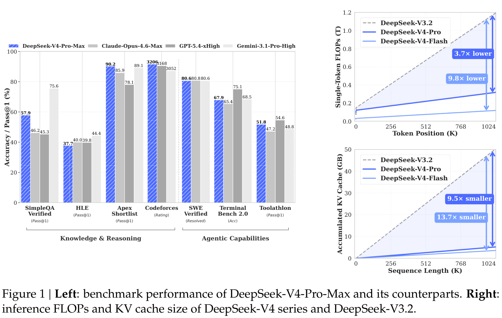
推理模型（DeepSeek-AI, 2025; OpenAI, 2024c）的出现确立了 test-time scaling 的新范式，推动 LLM 性能大幅提升。然而，这一扩展范式受到标准 attention 机制（Vaswani et al., 2017）二次计算复杂度的根本制约，给超长上下文和推理过程带来难以承受的瓶颈。与此同时，从复杂的 agent 工作流到大规模跨文档分析，长程场景和任务的出现，也使高效支持超长上下文成为未来进步的关键。尽管近期的开源工作（Bai et al., 2025a; DeepSeek-AI, 2024; MiniMax, 2025; Qwen, 2025）推动了通用能力的发展，但处理超长序列时这一核心架构效率问题仍是关键障碍，限制了 test-time scaling 带来的进一步收益，也阻碍了对长程场景和任务的进一步探索。
为突破超长上下文的效率壁垒，我们开发了 DeepSeek-V4 系列，包括总参数量 1.6T（激活 49B）的 DeepSeek-V4-Pro 预览版，以及总参数量 284B（激活 13B）的 DeepSeek-V4-Flash 预览版。通过架构创新，DeepSeek-V4 系列在处理超长序列的计算效率上实现了显著飞跃。这一突破使高效支持一百万 token 上下文成为可能，为下一代 LLM 开启了百万长度上下文的新时代。我们相信，高效处理超长序列的能力打开了 test-time scaling 的下一个前沿，为更深入研究长程任务铺平道路，并为探索在线学习等未来范式奠定必要基础。
相较于 DeepSeek-V3 架构（DeepSeek-AI, 2024），DeepSeek-V4 系列保留了 DeepSeekMoE 框架（Dai et al., 2024）和 MTP 策略，同时在架构与优化方面引入若干关键创新。为增强长上下文效率，我们设计了结合 CSA 与 HCA 的混合 attention 机制。CSA 沿序列维度压缩 KV cache，然后执行 DeepSeek Sparse Attention（DSA）（DeepSeek-AI, 2025）；HCA 则对 KV cache 进行更激进的压缩，但仍使用稠密 attention。为增强建模能力，我们引入 mHC（Xie et al., 2026），升级传统残差连接。此外，我们在 DeepSeek-V4 系列训练中引入 Muon 优化器（Jordan et al., 2024; Liu et al., 2025），加快收敛并提高训练稳定性。
为实现 DeepSeek-V4 系列的高效训练与推理，并提高开发效率，我们引入了多项基础设施优化。第一，为 MoE 模块设计并实现单个融合内核，使计算、通信和内存访问充分重叠。第二，采用领域专用语言（DSL）TileLang（Wang et al., 2026），兼顾开发效率与运行效率。第三，提供高效的 batch 不变性与确定性内核库，确保训练和推理的逐位可复现性。第四，在训练框架方面，扩展 autograd 框架，加入张量级 checkpoint 以细粒度控制重计算；并通过 Muon 优化器的混合 ZeRO 策略、基于重计算与融合内核的低成本 mHC 实现，以及管理压缩 attention 的两阶段 CP，提高训练效率。第五，在推理框架方面，设计带有磁盘存储策略的异构 KV cache 结构，实现高效的共享前缀复用。此外，在后训练阶段，我们对 MoE 专家权重和索引器 QK 路径采用 FP4 QAT，以减少内存和计算开销。
通过采用 CSA 与 HCA 混合架构，并优化计算与存储精度，DeepSeek-V4 系列相较 DeepSeek-V3.2 显著降低了推理 FLOPs，大幅缩减了 KV cache，尤其是在长上下文设置下。图 1 右侧展示了 DeepSeek-V3.2 和 DeepSeek-V4 系列的估算单 token 推理 FLOPs 与累计 KV cache 大小。在 1M token 上下文场景中，即使是激活参数量更大的 DeepSeek-V4-Pro，其单 token FLOPs（按等效 FP8 FLOPs 计）也仅为 DeepSeek-V3.2 的 27%，KV cache 大小仅为其 10%。此外，激活参数量更小的 DeepSeek-V4-Flash 将效率进一步提高：在 1M token 上下文设置下，其单 token FLOPs 仅为 DeepSeek-V3.2 的 10%，KV cache 大小仅为其 7%。另外，DeepSeek-V4 系列的路由专家参数使用 FP4 精度。虽然在现有硬件上，FP4 × FP8 运算的峰值 FLOPs 与 FP8 × FP8 相同，但理论上，未来硬件能够将其实现得更加高效，效率提高 1/3，从而进一步增强 DeepSeek-V4 系列的效率。
在预训练期间，我们分别使用 32T token 训练 DeepSeek-V4-Flash，使用 33T token 训练 DeepSeek-V4-Pro。预训练后，这两个模型能够原生、高效地支持 1M 长度上下文。在内部评测中，采用更高参数效率设计的 DeepSeek-V4-Flash-Base 已在多数基准上超越 DeepSeek-V3.2-Base。DeepSeek-V4-Pro-Base 进一步扩大这一优势，确立了 DeepSeek 基础模型的新性能标准，在推理、编程、长上下文和世界知识任务上全面领先。
DeepSeek-V4 系列后训练流程采用两阶段范式：先独立培养各领域专项模型，再通过 OPD（Gu et al., 2024; Lu and Lab, 2025）整合成统一模型。最初，针对数学、编程、agent 和指令遵循等每个目标领域，分别独立训练一个专项模型。基础模型首先在高质量领域数据上进行 SFT，建立基础能力。随后，使用 GRPO（DeepSeek-AI, 2025）进行强化学习（RL），由针对具体成功标准定制的 RM 引导，进一步优化符合领域要求的行为。该阶段得到一组多样化的专项模型，每个都擅长其相应领域。最后，为整合这些不同专长，通过 OPD 训练一个统一模型；统一模型作为学生，学习优化相对于教师模型的反向 KL 损失。
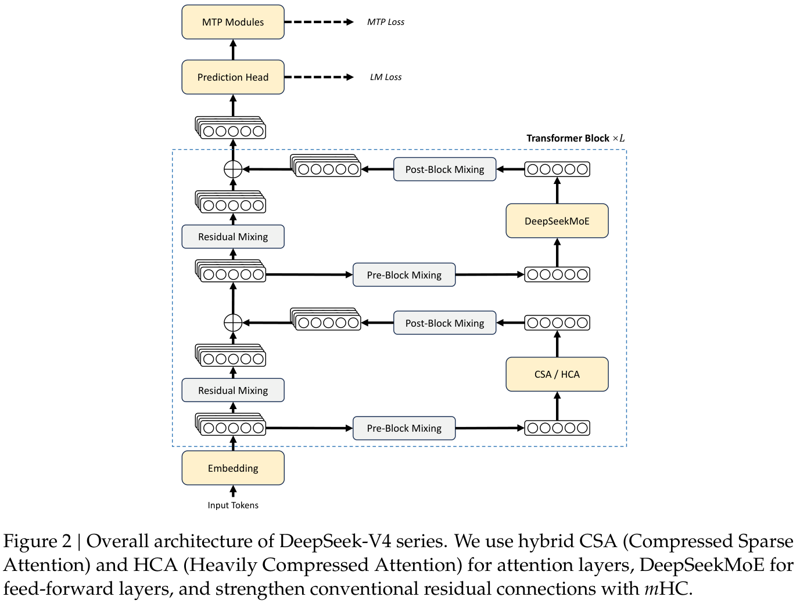
（续上页推理条目）
GPT-5.2 和 Gemini-3.0-Pro 相当，确立了其作为复杂推理任务高性价比架构的地位。
总体而言，DeepSeek-V4 系列保留了 Transformer 架构（Vaswani et al., 2017）和 MTP 模块（DeepSeek-AI, 2024; Gloeckle et al., 2024），同时相对 DeepSeek-V3 引入了若干关键升级：（1）首先，引入 mHC（Xie et al., 2026），增强传统残差连接；（接下页）
（续上页）
（2）其次，设计混合 attention 架构，通过 CSA 和 HCA 显著提高长上下文效率。（3）第三，使用 Muon（Jordan et al., 2024; Liu et al., 2025）作为优化器。对于 MoE 组件，我们仍采用 DeepSeekMoE 架构（Dai et al., 2024），仅相对 DeepSeek-V3 作少量调整。MTP（DeepSeek-AI, 2024; Gloeckle et al., 2024; Li et al., 2024; Qi et al., 2020）的配置与 DeepSeek-V3 完全相同。所有其他未说明的细节均沿用 DeepSeek-V3（DeepSeek-AI, 2024）的设置。图 2 展示了 DeepSeek-V4 的整体架构，具体细节如下。
MoE。与先前的 DeepSeek 系列模型（DeepSeek-AI, 2024; DeepSeek-AI, 2024）一样，DeepSeek-V4 系列的 FFN 也采用 DeepSeekMoE 范式（Dai et al., 2024），设置细粒度路由专家和共享专家。与 DeepSeek-V3 不同，我们将计算亲和度分数的激活函数从 Sigmoid(·) 改为 Sqrt(Softplus(·))。负载均衡方面，同样采用无辅助损失策略（DeepSeek-AI, 2024; Wang et al., 2024a），并辅以较小的序列级均衡损失，防止单条序列内出现极端不均衡。对于 DeepSeek-V4，我们移除了路由目标节点数量的限制，并精心重新设计并行策略以维持训练效率。此外，相较 DeepSeek-V3，我们将最初几个 Transformer 块中的稠密 FFN 层替换为采用 Hash 路由（Roller et al., 2021）的 MoE 层。Hash 路由策略根据输入 token ID，使用预定义哈希函数确定每个 token 的目标专家。
MTP。与 DeepSeek-V3 一样，DeepSeek-V4 系列也设置了 MTP 模块和目标。鉴于 MTP 策略已在 DeepSeek-V3 中得到验证，我们在 DeepSeek-V4 系列中原样采用这一策略。
如图 2 所示，DeepSeek-V4 系列引入 mHC（Xie et al., 2026），增强相邻 Transformer 块间的传统残差连接。相较于朴素 Hyper-Connections（HC）（Zhu et al., 2025），mHC 的核心思想是将残差映射约束到特定流形上，从而在保持模型表达能力的同时，提高跨层信号传播的稳定性。本节简要介绍标准 HC，并说明如何设计 mHC 以实现稳定训练。
标准 Hyper-Connections。标准 HC 将 residual stream 宽度扩展为原来的 \(n_{hc}\) 倍。具体来说，residual stream 形状由 \(\mathbb{R} ^{d}\) 扩展为 \(\mathbb{R} ^{n_{hc}\times d}\)，其中 \(d\) 是实际层输入的隐藏维度。令 \(X_{l} = [x_{l,1}; \ldots ; x_{l,n_{hc}}]^{T} \in \mathbb{R} ^{n_{hc}\times d}\) 表示第 \(l\) 层之前的残差状态。HC 引入三个线性映射：输入映射 \(A_{l} \in \mathbb{R} ^{1\times n_{hc}}\)、残差变换 \(B_{l} \in \mathbb{R} ^{n_{hc}\times n_{hc}}\) 和输出映射 \(C_{l} \in \mathbb{R} ^{n_{hc}\times 1}\)。残差状态更新公式如下：
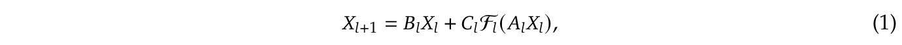
其中 \(F_{l}\) 表示第 \(l\) 层（例如 MoE 层），其输入和输出形状均为 \(\mathbb{R} ^{d}\)。注意，实际层输入 \(A_{l}X_{l} \in \mathbb{R} ^{d}\) 也为 \(d\) 维，因此扩展后的残差……（接下页）
（续上页）
宽度不会影响内部层的设计。HC 将残差宽度与实际隐藏维度解耦，提供了一个互补的扩展维度，而计算开销很小，因为 \(n_{hc}\) 通常远小于隐藏维度 \(d\)。不过，尽管 HC 已展现出提升模型性能的潜力，我们发现，堆叠多个层时，训练经常表现出数值不稳定性，阻碍了 HC 的规模扩展。
流形约束残差映射。mHC 的核心创新是将残差映射矩阵 \(B_{l}\) 约束到双随机矩阵流形（Birkhoff 多面体）\(\mathcal{M}\) 上，从而增强跨层信号传播的稳定性：
这一约束确保映射矩阵的谱范数 \(\Vert B_{l}\Vert _{2}\) 不超过 1，因此残差变换是非扩张的，提高了前向传播和反向传播的数值稳定性。此外，集合 \(\mathcal{M}\) 对乘法封闭，保证了深层 mHC 堆叠场景的稳定性。输入变换 \(A_{l}\) 与输出变换 \(C_{l}\) 也通过 Sigmoid 函数被约束为非负且有界，以避免信号抵消的风险。
动态参数化。三个线性映射的参数动态生成，并分解为动态（依赖输入）分量和静态（不依赖输入）分量。给定输入 \(X_{l} \in \mathbb{R} ^{n_{hc}\times d}\)，先将其展平并归一化：\(\hat{X}_{l} = \operatorname{RMSNorm}(\operatorname{vec}(X_l)) \in \mathbb{R} ^{1\times n_{hc}d}\)。随后，遵循传统 HC，生成无约束原始参数 \(\tilde{A}_{l} \in \mathbb{R} ^{1\times n_{hc}}\)、\(\tilde{B}_{l} \in \mathbb{R} ^{n_{hc}\times n_{hc}}\) 和 \(\tilde{C}_{l} \in \mathbb{R} ^{n_{hc}\times 1}\)：
其中，\(W_{l}^{pre}\)、\(W_{l}^{post} \in \mathbb{R} ^{n_{hc}d\times n_{hc}}\) 以及 \(W_{l}^{res} \in \mathbb{R} ^{n_{hc}d\times n_{hc}^{2}}\) 是用于生成动态分量的可学习参数；Mat(·) 将大小为 \(1 \times n_{hc}^{2}\) 的向量重塑为 \(n_{hc} \times n_{hc}\) 的矩阵；\(S_{l}^{pre} \in \mathbb{R} ^{1\times n_{hc}}\)、\(S_{l}^{post} \in \mathbb{R} ^{n_{hc}\times 1}\) 和 \(S_{l}^{res} \in \mathbb{R} ^{n_{hc}\times n_{hc}}\) 是可学习静态偏置；\(\alpha _{l}^{pre}\)、\(\alpha _{l}^{res}\)、\(\alpha _{l}^{post} \in \mathbb{R}\) 是初始化为较小值的可学习门控因子。
应用参数约束。得到无约束原始参数 \(\tilde{A}_{l}\)、\(\tilde{B}_{l}\)、\(\tilde{C}_{l}\) 后，对其施加前述约束以增强数值稳定性。具体来说，对于输入和输出映射，使用 Sigmoid 函数 \(\sigma (\cdot )\) 确保其非负性与有界性：
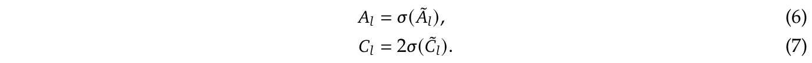
对于残差映射 \(\tilde{B}_{l}\)，将其投影到双随机矩阵流形 \(\mathcal{M}\) 上。这通过 Sinkhorn-Knopp 算法实现：首先对 \(\tilde{B}_{l}\) 应用指数函数确保其为正，得到 \(M^{(0)} = \operatorname{exp}(\tilde{B}_{l})\)，再迭代进行列归一化与行归一化：
其中 \(T_{r}\) 和 \(T_{c}\) 分别表示行归一化与列归一化。这一迭代收敛到受约束的双随机矩阵 \(B_{l} = M^{(t_{max})}\)。我们选择 \(t_{max} = 20\) 作为实用取值。
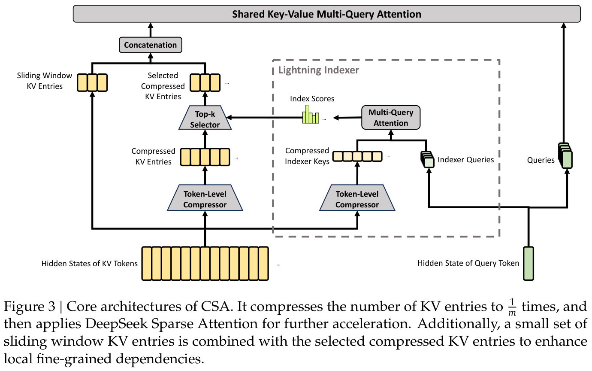
当上下文长度达到极大规模时，attention 机制成为模型的主要计算瓶颈。对于 DeepSeek-V4，我们设计了两种高效 attention 架构：CSA 和 HCA，并交错混合配置这两种架构，大幅降低长文本场景中的 attention 计算成本。CSA 整合压缩与稀疏 attention 策略：首先将每 \(m\) 个 token 的键值（KV）缓存压缩为一个条目，然后应用 DeepSeek Sparse Attention（DSA）（DeepSeek-AI, 2025），使每个查询 token 仅关注 \(k\) 个压缩 KV 条目。HCA 追求极致压缩，将每 \(m^{\prime}\,(\gg m)\)个 token 的 KV cache 合并为一个条目。CSA 与 HCA 混合架构显著提升了 DeepSeek-V4 系列的长上下文效率，使一百万 token 上下文在实践中成为可能。本节描述混合 attention 架构的核心技术，我们也提供了开源实现1，以明确说明更多细节。
CSA 的核心架构如图 3 所示，先将每 \(m\) 个 token 的 KV cache 压缩为一个条目，再应用 DeepSeek Sparse Attention 进一步加速。
压缩键值条目。令 \(H \in \mathbb{R} ^{n\times d}\) 为输入隐藏状态序列，其中 \(n\) 为序列长度，\(d\) 为隐藏维度。CSA 首先计算两组 KV 条目 \(C^{a}\)、\(C^{b} \in \mathbb{R} ^{n\times c}\) 及对应压缩权重 \(Z^{a}\)、\(Z^{b} \in \mathbb{R} ^{n\times c}\)，其中 \(c\) 为 attention 头维度：（公式接下页）
1 https://huggingface.co/deepseek-ai/DeepSeek-V4-Pro/tree/main/inference
（续上页，attention 头维度为 \(c\)）
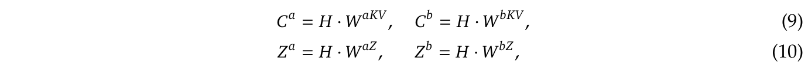
其中 \(W^{aKV}\)、\(W^{bKV}\)、\(W^{aZ}\)、\(W^{bZ} \in \mathbb{R} ^{d\times c}\) 是可训练参数。接下来，依据压缩权重及可学习位置偏置 \(B^{a}\)、\(B^{b} \in \mathbb{R} ^{m\times c}\)，将 \(C^{a}\) 和 \(C^{b}\) 中每 \(m\) 个 KV 条目压缩为一个，得到 \(C^{Comp} \in \mathbb{R} ^{(n/m)\times c}\)。每个压缩条目 \(C_{i}^{Comp} \in \mathbb{R} ^{c}\) 按如下方式计算：
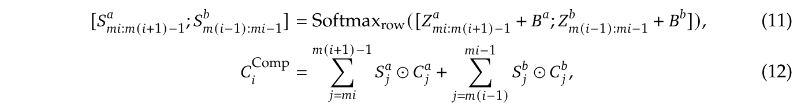
其中 ⊙ 表示 Hadamard 积；\(Softmax_{row}(\cdot )\) 表示沿行维度执行 softmax，在来自 \(Z^{a}\) 与 \(Z^{b}\) 的总计 2m 个元素上归一化。当 \(i\) = 0 时，\(Z^{b}_{m(i-1):mi-1}\) 填充为负无穷，\(C^{b}_{m(i-1):mi-1}\) 填充为零。注意，每个 \(C_{i}^{Comp}\) 都来自 2m 个 KV 条目，但用于 \(C_{i}^{Comp}\) 的 \(C^{b}\) 索引，与用于 \(C_{i-1}^{Comp}\) 的 \(C^{a}\) 索引存在重叠。因此，CSA 实际将序列长度压缩为原来的 1/m。
用于稀疏选择的 lightning indexer。得到压缩 KV 条目 \(C^{Comp}\) 后，CSA 应用 DSA 策略，选择 top-\(k\) 个压缩 KV 条目用于核心 attention。首先，CSA 执行与 \(C^{Comp}\) 相同的压缩操作，得到压缩索引器键 \(K^{IComp} \in \mathbb{R} ^{(n/m)\times c_{I}}\)，其中 \(c_{I}\) 是索引器头维度。然后，对于查询 token \(t\)，以低秩方式生成索引器查询 \(\{q_{t,1}^{I}; q_{t,2}^{I}; \ldots ; q_{t,n_{h}^{I}}^{I}\}\)：
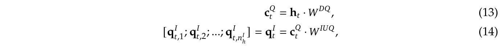
其中 \(h_{t} \in \mathbb{R} ^{d}\) 是查询 token \(t\) 的输入隐藏状态；\(c_{t}^{Q} \in \mathbb{R} ^{d_{c}}\) 是查询的压缩潜向量；\(d_{c}\) 表示查询压缩维度；\(n_{h}^{I}\) 表示索引器查询头数量；\(W^{DQ} \in \mathbb{R} ^{d\times d_{c}}\) 和 \(W^{IUQ} \in \mathbb{R} ^{d_{c}\times c_{I}n_{h}^{I}}\) 分别为索引器查询的下投影与上投影矩阵。接下来，查询 token \(t\) 与其之前的压缩块 \(s\)（\(s\) < Floor(t/m)）之间的索引分数 \(I_{t,s} \in \mathbb{R}\) 按如下方式计算：
其中 \(W^{w} \in \mathbb{R} ^{d\times n_{h}^{I}}\) 是可学习矩阵；\(w_{t,h}^{I} \in \mathbb{R}\) 是第 h 个索引器头的权重。对于查询 token \(t\)，给定索引分数 \(I_{t,:}\)，使用 top-k 选择器选择性保留压缩 KV 条目的子集 \(C_{t}^{SprsComp}\)，供后续核心 attention 使用：
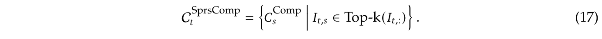
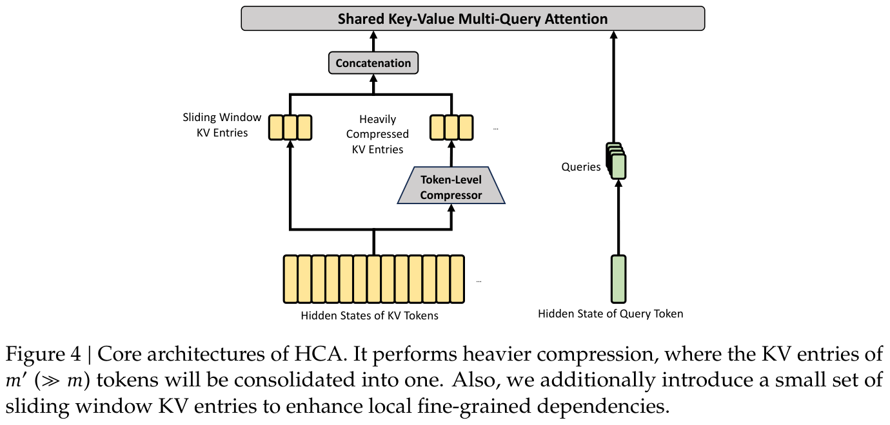
共享键值的 MQA。选择稀疏 KV 条目后，CSA 以 MQA（Shazeer, 2019）的方式执行核心 attention，其中 \(C_{t}^{SprsComp}\) 中每个压缩 KV 条目同时充当 attention 的键和值。具体来说，对于查询 token \(t\)，首先从压缩潜向量 \(c_{t}^{Q}\) 生成 attention 查询 \(\{q_{t,1}; q_{t,2}; \ldots ; q_{t,n_{h}}\}\)：
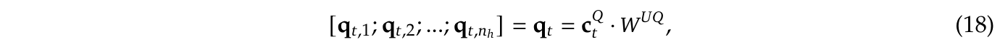
其中 \(n_{h}\) 表示查询头数量；\(W^{UQ} \in \mathbb{R} ^{d_{c}\times cn_{h}}\) 是查询的上投影矩阵。注意，潜查询向量 \(c_{t}^{Q}\) 与索引器查询所用的向量共享。接下来，对 \(\{q_{t,i}\}\) 与 \(C_{t}^{SprsComp}\) 执行 MQA：
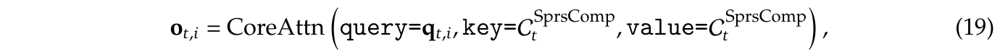
其中 \(o_{t,i} \in \mathbb{R} ^{c}\) 是第 \(t\) 个 token 的第 \(i\) 个头的核心 attention 输出；CoreAttn(·) 表示核心 attention 操作。
分组输出投影。在 DeepSeek-V4 的配置中，\(cn_{h}\) 相当大。因此，将核心 attention 输出 \([o_{t,1}; o_{t,2}; \ldots ; o_{t,n_{h}}] = o_{t} \in \mathbb{R} ^{cn_{h}}\) 直接投影为 \(d\) 维隐藏状态，会带来很大的计算负担。为降低这一成本，我们设计分组输出投影策略。具体而言，先将 \(n_{h}\) 个输出分为 \(g\) 组，再将每组输出 \(o_{t,i}^{G} \in \mathbb{R} ^{cn_{h}/g}\) 投影为 \(d_{g}\) 维中间输出 \(o_{t,i}^{G'} \in \mathbb{R} ^{d_{g}}\)，其中 \(d_{g} < cn_{h}/g\)。最后，将中间输出 \([o_{t,1}^{G'}; o_{t,2}^{G'}; \ldots ; o_{t,g}^{G'}] \in \mathbb{R} ^{d_{g}g}\) 投影为最终 attention 输出 ô\(_{t} \in \mathbb{R} ^{d}\)。
HCA 核心架构如图 4 所示，以更高压缩程度压缩 KV cache，但不采用稀疏 attention。
压缩键值条目。总体上，HCA 的压缩策略与 CSA 类似，但使用更大的压缩率 \(m^{\prime}\,(\gg m)\)，且不进行重叠压缩。（接下页）
（续上页）
令 \(H \in \mathbb{R} ^{n\times d}\) 为输入隐藏状态序列，HCA 首先计算原始 KV 条目 \(C \in \mathbb{R} ^{n\times c}\) 与其对应压缩权重 \(Z \in \mathbb{R} ^{n\times c}\)：
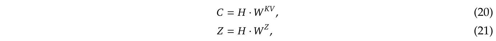
其中 \(W^{KV}\)、\(W^{Z} \in \mathbb{R} ^{d\times c}\) 是可训练参数。接下来，根据压缩权重及可学习位置偏置 \(B \in \mathbb{R} ^{m'\times c}\)，将 \(C\) 中每 \(m\)′ 个 KV 条目压缩为一个，得到 \(C^{Comp} \in \mathbb{R} ^{(n/m')\times c}\)。每个压缩条目 \(C_{i}^{Comp} \in \mathbb{R} ^{c}\) 按如下方式计算：
通过这一压缩操作，HCA 将序列长度压缩为原来的 1/m′。
共享键值的 MQA 与分组输出投影。HCA 同样采用 CSA 使用的共享 KV MQA 和分组输出投影策略。在 KV 压缩后，对于查询 token \(t\)，HCA 首先以低秩方式生成 attention 查询 \(\{q_{t,1}; q_{t,2}; \ldots ; q_{t,n_{h}}\}\)：
其中 \(h_{t} \in \mathbb{R} ^{d}\) 是查询 token \(t\) 的输入隐藏状态；\(n_{h}\) 表示查询头数量；\(W^{DQ} \in \mathbb{R} ^{d\times d_{c}}\) 和 \(W^{UQ} \in \mathbb{R} ^{d_{c}\times cn_{h}}\) 分别为查询的下投影与上投影矩阵。接下来，对 \(\{q_{t,i}\}\) 和 \(C^{Comp}\) 执行 MQA：
其中 \(o_{t,i} \in \mathbb{R} ^{c}\) 是第 \(t\) 个 token 的第 \(i\) 个头的核心 attention 输出。随后，与 CSA 一样，HCA 将 \(n_{h}\) 个输出分为 \(g\) 组，并将每组输出 \(o_{t,i}^{G} \in \mathbb{R} ^{cn_{h}/g}\) 投影为 \(d_{g}\) 维中间输出 \(o_{t,i}^{G'} \in \mathbb{R} ^{d_{g}}\)，其中 \(d_{g} < cn_{h}/g\)。最后，HCA 将中间输出 \([o_{t,1}^{G'}; o_{t,2}^{G'}; \ldots ; o_{t,g}^{G'}] \in \mathbb{R} ^{d_{g}g}\) 投影为最终 attention 输出 ô\(_{t} \in \mathbb{R} ^{d}\)。
除上述 CSA 与 HCA 核心架构外，混合 attention 还包含若干其他技术。为使叙述清晰，我们在上述介绍中省略了这些附加技术，将在本节简要说明。此外，本节仅关注其核心思想，为简洁起见可能省略某些细节。我们鼓励读者查阅开源实现，了解明确无歧义的细节。
查询与键值条目归一化。对于 CSA 与 HCA，在核心 attention 操作之前，我们对查询的每个头和压缩 KV 条目的唯一一个头额外执行 RMSNorm。这种归一化可避免 attention logits 爆炸，并可能提高训练稳定性。
部分 RoPE。对于 CSA 与 HCA，我们将 RoPE（Su et al., 2024）部分应用于 attention 查询、KV 条目以及核心 attention 输出。具体来说，对于 CSA 和 HCA 中使用的每个查询向量与 KV 条目向量，将 RoPE 应用于其最后 64 个维度。由于 KV 条目同时作为 attention 的键和值，朴素核心 attention 输出 \(\{o_{t,i}\}\) 会携带由 KV 条目加权求和产生的绝对位置 embedding。作为应对措施，我们还对每个 \(o_{t,i}\) 的最后 64 个维度施加位置为 −\(i\) 的 RoPE。这样，核心 attention 输出也会携带相对位置 embedding：每个 KV 条目对核心 attention 输出的贡献，也会与查询和该 KV 条目之间的距离相关。
附加 SWA 分支。为在 CSA 和 HCA 中严格保持因果性，每个查询仅关注之前的压缩 KV 块。因此，查询无法访问自身所在压缩块内其他 token 的信息。同时，在语言建模中，最近的 token 通常与查询 token 更相关。基于这些原因，我们为 CSA 与 HCA 都引入了滑动窗口形式的附加 attention 分支，以更好地建模局部依赖。具体而言，对于每个查询 token，额外生成对应最近 \(n_{win}\) 个 token 的 \(n_{win}\) 个未压缩 KV 条目。在 CSA 和 HCA 的核心 attention 中，这些滑动窗口 KV 条目与压缩 KV 条目一起使用。
Attention sink。在 CSA 与 HCA 的核心 attention 中，采用 attention sink 技巧（OpenAI, 2025; Xiao et al., 2024）。具体来说，设置一组可学习的汇聚点 logits \(\{{z'}_{1}, {z'}_{2}, \ldots , {z'}_{n_{h}}\}\)。对于第 \(h\) 个 attention 头，将 \(\operatorname{Exp}({z'}_{h})\) 加入 attention 分数的分母：
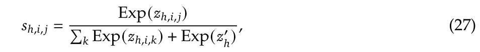
其中 \(s_{h,i,j}\)、\(z_{h,i,j} \in \mathbb{R}\) 分别表示第 \(h\) 个 attention 头中，第 \(i\) 个查询 token 与第 \(j\) 个先前 token 或压缩块之间的 attention 分数和 attention logit。此技术允许每个查询头将其 attention 总分调整为不等于 1，甚至接近 0。
采用 CSA 与 HCA 混合架构，加上低精度计算与存储，使 DeepSeek-V4 系列的 attention 模块在 attention FLOPs 和 KV cache 大小方面都具有显著效率优势，尤其在长上下文场景中。首先，我们为 KV 条目采用混合存储格式：RoPE 维度使用 BF16 精度，其余维度使用 FP8 精度。相较纯 BF16 存储，这种混合表示将 KV cache 大小减少了近一半。第二，lightning indexer 内的 attention 计算使用 FP4 精度，加速极长上下文下的 attention 操作。第三，相较 DeepSeek-V3.2，DeepSeek-V4 系列选择更小的 attention top-k，提高了模型处理短、中长度文本的效率。最后，也是最重要的一点，压缩 attention 与混合 attention 技术大幅减少了 KV cache 大小与计算 FLOPs。
以头维度为 128 的 BF16 GQA8（Ainslie et al., 2023）这一常见 LLM attention 配置为基线，在 1M 上下文设置下，DeepSeek-V4 系列的 KV cache 大小可显著缩减至该基线的约 2%。
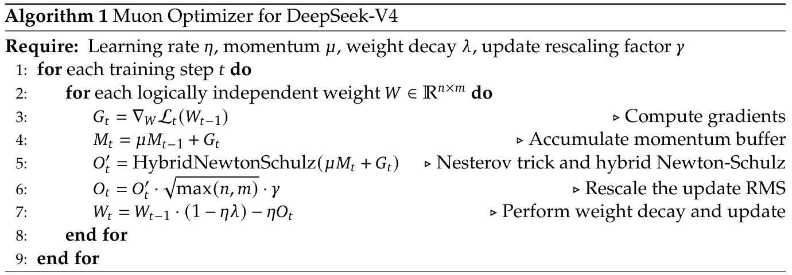
此外，即使与本身已是高效基线的 DeepSeek-V3.2（DeepSeek-AI, 2025）相比，DeepSeek-V4 系列依然展现出显著效率优势。图 1 右侧提供了其推理 FLOPs 与 KV cache 大小的对比。
由于 Muon（Jordan et al., 2024; Liu et al., 2025）收敛更快且训练稳定性更好，我们将其用于 DeepSeek-V4 系列中的大多数模块。Muon 优化的完整算法汇总于算法 1。
基本配置。对于 embedding 模块、预测头模块、mHC 模块的静态偏置和门控因子，以及所有 RMSNorm 模块的权重，继续使用 AdamW 优化器（Loshchilov and Hutter, 2017）。其余所有模块由 Muon 更新。遵循 Liu et al.（2025），我们也对 Muon 参数施加权重衰减，使用 Nesterov 技巧（Jordan et al., 2024; Nesterov, 1983），并重新缩放更新矩阵的均方根（RMS），以复用 AdamW 超参数。与他们不同，我们使用混合 Newton-Schulz 迭代进行正交化。
混合 Newton-Schulz 迭代。对于给定矩阵 \(M\)，令其奇异值分解（SVD）为 \(M = U\Sigma V^{T}\)。Newton-Schulz 迭代旨在将 \(M\) 近似正交化为 \(UV^{T}\)。通常，先将 \(M\) 归一化为 \(M_{0} = M/\Vert M\Vert _{F}\)，确保其最大奇异值不超过 1。随后，每次 Newton-Schulz 迭代执行如下操作：
我们的混合 Newton-Schulz 分两个不同阶段执行 10 次迭代。前 8 步使用系数 (a, b, c) = (3.4445, −4.7750, 2.0315) 推动快速收敛，使奇异值接近 1。最后 2 步切换为系数 (a, b, c) = (2, −1.5, 0.5)，将奇异值精确稳定在 1。
避免 attention logits 爆炸。DeepSeek-V4 系列的 attention 架构允许直接对 attention 查询与 KV 条目应用 RMSNorm，有效防止 attention logits 爆炸。因此，我们在 Muon 优化器中不采用 QK-Clip 技术（Liu et al., 2025）。
MoE 可通过 EP 加速。然而，EP 需要复杂的节点间通信，对互连带宽与延迟提出很高要求。为缓解 EP 的通信瓶颈，并在较低互连带宽要求下获得更高的端到端性能，我们提出细粒度 EP 方案，将通信和计算融合到单个流水线内核中，实现通信与计算重叠。
通信延迟可以被隐藏。本方案的关键洞见是：MoE 层的通信延迟可以被有效隐藏在计算之下。如图 5 所示，在 DeepSeek-V4 系列中，每个 MoE 层主要可分解为四个阶段：两个受通信限制的阶段 Dispatch 和 Combine，以及两个受计算限制的阶段 Linear-1 和 Linear-2。性能分析表明，单个 MoE 层内通信总时间少于计算总时间。因此，将通信与计算融合到统一流水线后，计算仍是主要瓶颈，这意味着系统能够容忍更低的互连带宽，而不会降低端到端性能。
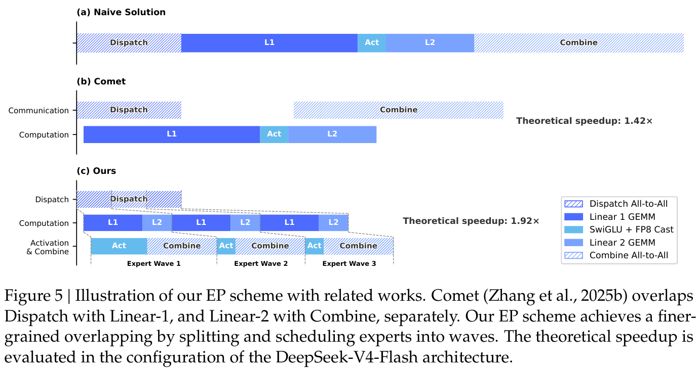
细粒度 EP 方案。为进一步降低互连带宽要求，并放大重叠带来的收益，我们引入更细粒度的专家划分方案。受多项相关工作（Aimuyo et al., 2025; Zhang et al., 2025b）启发，将专家划分为多个波次并进行调度。每个波次包含一小部分专家。一旦波次内所有专家完成通信，即可立即开始计算，无须等待其他专家。如图 5 所示，稳态下，当前波次的计算、下一波次的 token 传输和已完成专家的结果发送同时进行。这在专家之间形成细粒度流水线，使整个波次中的计算与通信保持连续。按波次调度提高了……（接下页）
（续上页）
强化学习（RL）轨迹生成等极端场景的性能；这些场景通常会遇到长尾 mini-batch。
性能与开源巨型内核。我们在 NVIDIA GPU 和 HUAWEI Ascend NPU 两种平台上验证了细粒度 EP 方案。相较强大的非融合基线，它在一般推理工作负载上获得 1.50～1.73 倍加速，在 RL 轨迹生成和高速 agent 服务等延迟敏感场景下，最高可达 1.96 倍。我们已将基于 CUDA 的巨型内核实现 MegaMoE2 作为 DeepGEMM 的组件开源。
观察与建议。我们分享内核开发中的观察与经验，并向硬件厂商提出一些建议，希望帮助设计高效硬件，实现更好的软硬件协同设计：
\(C/B \le 2d = 6144\) FLOPs/Byte。
即每 GBps 互连带宽足以隐藏对应 6.1 TFLOP/s 计算的通信。一旦带宽达到这一阈值，它便不再是瓶颈，继续投入芯片面积提升带宽的收益将递减。我们鼓励未来硬件设计以此类平衡点为目标，而不是无条件扩大带宽。实际中，我们复杂精细的模型架构原本会产生数百个细粒度 Torch ATen 算子。我们采用 TileLang（Wang et al., 2026）开发了一组融合内核……（接下页）
（续上页）
替代绝大多数算子，以较小投入获得最佳性能。它还允许我们在验证期间快速制作 attention 变体等算子的原型。这些内核在模型架构开发、大规模训练，以及最终推理服务的生产部署中起到关键作用。作为领域专用语言（DSL），TileLang 兼顾开发效率和运行效率，支持快速开发，也支持在同一代码库内进行深入的迭代优化。此外，我们与 TileLang 社区密切合作，推动内核开发流程变得更敏捷、高效、稳定。
通过主机代码生成降低调用开销。随着加速器性能不断提高，CPU 侧编排开销日益突出。对于小型、高度优化的内核，这种固定主机开销很容易限制利用率和吞吐量。常见来源是主机侧逻辑，例如运行时契约检查，为灵活性通常用 Python 编写，因此每次调用都产生固定成本。
我们通过 Host Codegen 缓解这一开销，将大部分主机侧逻辑移入生成的主机代码。具体来说，先在中间表示（IR）层面同时生成设备内核和轻量级主机启动器，embedding 从语言前端解析的必要元数据，如数据类型、秩与形状约束，以及步长与布局假设。启动器随后被降级为基于 TVM-FFI 框架（Chen et al., 2018）的主机源代码，其紧凑调用约定与零拷贝张量互操作共同将主机侧开销降至最低。运行时，这些生成的主机代码执行验证与参数封送，将每次调用的所有检查移出 Python 执行路径。测量显示，CPU 侧验证开销由数十或数百微秒降至每次调用不足一微秒。
SMT 求解器辅助的形式化整数分析。TileLang 内核涉及复杂的张量索引算术，需要强大的形式化整数分析。在布局推断、内存风险检测和边界分析等编译阶段，编译器必须验证整数表达式是否满足特定性质，才能启用对应优化。因此，更强的形式化分析能力能够带来更高级、更复杂的优化机会。
为此，我们将 Z3 SMT 求解器（De Moura and Bjørner, 2008）整合进 TileLang 的代数系统，为张量程序中的大多数整数表达式提供形式化分析能力。我们将 TileLang 整数表达式转译为 Z3 的无量词非线性整数算术（QF_NIA），在计算开销与形式表达能力间取得平衡。基于整数线性规划（ILP）求解器，QF_NIA 能无缝处理内核中常见的标准线性整数表达式。此外，其固有的非线性推理能力有效解决了可变张量形状上的向量化等高级难题。在合理资源限制下，Z3 提升总体优化效果，同时将编译时间开销限制在数秒内。这对向量化、屏障插入和代码简化等多个编译阶段都产生显著影响。
数值精度与逐位可复现性。在生产环境中，数值正确性和可复现性与原始吞吐量同样关键。因此，我们默认优先保证精度：在编译器层面禁用 fast-math 优化；影响精度的近似仅作为需要显式选用的前端算子提供，例如 T.__exp、T.__log 和 T.__sin。另一方面，需要严格 IEEE-754 语义时，TileLang 提供……（接下页）
（续上页）
符合 IEEE 标准、带有显式舍入模式的内建函数，例如 T.ieee_fsqrt、T.ieee_fdiv 和 T.ieee_add，使开发者能够精确指定数值行为。
我们还以逐位可复现性为目标，用于将内核与手写 CUDA 基线对照验证。我们使 TileLang 的代数简化和降级规则与主流 CUDA 工具链（如 NVCC）保持一致，避免引入意外位级差异的变换。布局注解（如 T.annotate_layout）进一步允许用户固定依赖布局的降级决策，使求值与累加顺序和参考 CUDA 实现一致，从而在需要时实现逐位相同的输出。
评测显示，这些面向精度和可复现性的设计选择并未牺牲性能：在保守默认设置下，TileLang 内核仍具有竞争力，同时也提供控制项，允许选择性放宽数值约束以获得更高速度。
为实现高效训练和推理，我们开发了一整套高性能计算内核。除基本功能与最大化硬件利用率外，另一项关键设计目标是确保训练可复现，并使预训练、后训练和推理流程逐位对齐。因此，我们实现了端到端、逐位满足 batch 不变性且确定性的内核，同时将性能开销降至最低。这些内核有助于调试、稳定性分析，以及保持后训练行为一致。
Batch 不变性。batch 不变性确保任意给定 token 的输出，无论其在 batch 中的位置如何，都保持逐位相同。实现这一性质的主要挑战如下：
3 https://docs.nvidia.com/deeplearning/performance/dl-performance-matrix-multiplication/index.html#wave-quant
4 https://docs.nvidia.com/cuda/cuda-programming-guide/02-basics/writing-cuda-kernels.html#distributed-shared-memory
（续上页矩阵乘法条目）
因此，我们在大多数场景中放弃 split-k，但这可能导致性能下降。为此，引入一组优化，使矩阵乘法实现能在多数主要场景中匹敌甚至超越标准 split-k 的性能。
确定性。确定性训练对调试硬件或软件问题非常有益。此外，当训练出现 loss spike 等异常时，确定性使研究者更容易定位数值原因，并进一步改进模型设计。训练中的非确定性通常来自非确定性的累加顺序，而这往往是使用原子加法指令导致的。此问题主要发生在反向传播中，尤其是以下部分：
训练框架基于为 DeepSeek-V3 开发的可扩展、高效基础设施（DeepSeek-AI, 2024）。训练 DeepSeek-V4 时，我们继承这一稳健基础，同时引入若干关键创新，以适应新的架构组件，具体包括 Muon 优化器、mHC 与混合 attention 机制，并保持较高训练效率与稳定性。
Muon 优化器需要完整 gradient 矩阵才能计算参数更新，这在与 ZeRO（Rajbhandari et al., 2020）结合时带来挑战。传统 ZeRO 为 AdamW 等逐元素优化器设计，单个参数矩阵可以划分至多个进程并分别更新。为解决这一冲突，我们为 Muon 设计混合 ZeRO 桶分配策略。
对于稠密参数，我们限制 ZeRO 并行的最大规模，并采用背包算法将参数矩阵分配给这些进程，确保各进程管理的负载大致均衡。每个进程上的桶填充至所有进程中最大桶的大小，以支持高效 reduce-scatter 操作。在我们的设置中，每个进程管理的参数矩阵不超过五个，此填充通常产生不足 10% 的内存开销。（接下页）
（续上页）
当 DP 的总体规模超过 ZeRO 限制时，我们在额外的 DP 组中冗余计算 Muon 更新，以计算换取总桶内存减少。
对于 MoE 参数，各个专家独立优化。先展平所有层中所有专家 SwiGLU（Shazeer, 2020）的 down 投影矩阵，随后接入展平的 up 投影矩阵和 gate 矩阵。再对展平向量进行填充，确保能在所有进程间均匀分配，而不拆分任何逻辑上独立的矩阵。由于专家数量很大，MoE 参数不限制 ZeRO 并行规模，填充开销也可忽略。
此外，每个进程上形状相同的连续参数会自动合并，从而批量执行 Newton-Schulz 迭代，提高硬件利用率。我们还观察到，Muon 的 Newton-Schulz 迭代使用 BF16 矩阵乘法计算时仍然稳定。利用这一点，我们进一步以随机舍入方式，将需要跨 DP 进程同步的 MoE gradient 量化为 BF16 精度，使通信量减半。为避免低精度加法器引入累加误差，我们以两阶段方法替代传统树式或环式 reduce-scatter 集合通信。首先，通过 all-to-all 操作跨进程交换局部 gradient，然后各进程以 FP32 执行本地求和。这一设计保持了数值稳健性。
相较传统残差连接，引入 mHC 会增加激活内存占用和流水线阶段之间的通信量。为降低这些成本，我们实施若干优化策略。
首先，为训练和推理精心设计并实现 mHC 融合内核。第二，引入选择性保存中间张量 checkpoint 的重计算策略。具体而言，重计算大多数层间隐藏状态和所有归一化层输入，同时避免重计算计算密集型操作。这在内存节省和计算开销之间取得平衡。第三，调整 DualPipe 1F1B 重叠方案，以适应增加的流水线通信，并使 mHC 中某些操作能够并发执行。
综合起来，这些优化将 mHC 的实际耗时开销限制为重叠 1F1B 流水线阶段的 6.7%。更多工程优化细节见专门的 mHC 论文（Xie et al., 2026）。
传统 CP 划分序列维度，每个进程维护连续的 \(s\) 个 token。这给我们的压缩 attention 机制（CSA 和 HCA）带来两个挑战。一方面，训练样本由多个序列打包形成，各序列独立按 \(m\)（或 \(m\)′）的倍数压缩，少于 \(m\) 个的尾部 token 被丢弃。因此，压缩 KV 长度通常小于 s/m，且各进程间不同。另一方面，压缩需要 \(m\) 个连续 KV 条目，而它们可能跨越两个相邻 CP 进程的边界。
为应对这些挑战，我们设计两阶段通信方法。在第一阶段，每个进程 i 将其最后 m 个未压缩 KV 条目发送至进程 i + 1。随后，进程 i + 1 将部分接收条目与本地 s 个未压缩 KV 条目一起压缩，（接下页）
（续上页）
生成固定长度为 s/m + 1 的压缩条目，其中含有部分填充条目。第二阶段，跨所有 CP 进程执行 all-gather，收集各进程本地压缩的 KV 条目。随后，融合的选择与填充算子将其重组为完整压缩 KV 条目集合，总长度为 cp_size · s/m。所有填充条目置于尾部。对于 HCA 和 CSA 中的索引器，每个查询 token 可见的压缩 KV 条目范围可按规则预先计算。对于 CSA 的稀疏 attention，top-k 选择器显式指定每个查询可见的压缩 KV 条目索引。
传统激活 checkpoint 实现以整个模块为粒度，决定反向传播期间保留还是重计算其输出激活。这种粗粒度常导致重计算成本与激活内存占用之间的权衡不够理想。另一种方法是手动实现整个层的前向和反向逻辑，显式管理张量 checkpoint 状态。虽然可以细粒度控制，却失去了自动微分框架的便利，显著增加开发复杂度。
为实现细粒度控制且不牺牲编程效率，我们实现了支持自动微分的张量级激活 checkpoint 机制。开发者只需实现前向传播，选择性标注单个张量，即可自动保存 checkpoint 和重计算。框架使用 TorchFX（Reed et al., 2022）追踪完整计算图。对于每个标注张量，反向遍历识别重计算所需的最小子图。我们将这些最小子图定义为重计算图，在对应 gradient 计算之前插入反向逻辑中。
相较手动实现，该设计不会在训练期间引入额外开销。框架中的重计算直接释放标注张量的 GPU 内存，并复用重计算张量的存储指针，无需任何 GPU 内存拷贝。此外，由于图追踪会实际执行模型，我们可以追踪每个张量的底层存储指针，从而自动去重共享存储张量的重计算，例如 reshape 操作的输入与输出。这使开发者标注重计算时无须考虑底层内存细节。
推理框架大体继承自 DeepSeek-V3，但在 KV cache 管理上有所不同。
为高效管理 DeepSeek-V4 混合 attention 机制产生的异构 KV cache，我们设计了定制 KV cache 布局。图 6 展示这一布局，下文详细说明。
DeepSeek-V4 中的异构 KV 条目。DeepSeek-V4 系列的混合 attention 机制引入多种 KV 条目，其键值（KV）缓存大小与更新规则不同。用于稀疏选择的 lightning indexer 在 KV cache 中引入了额外维度，（接下页）
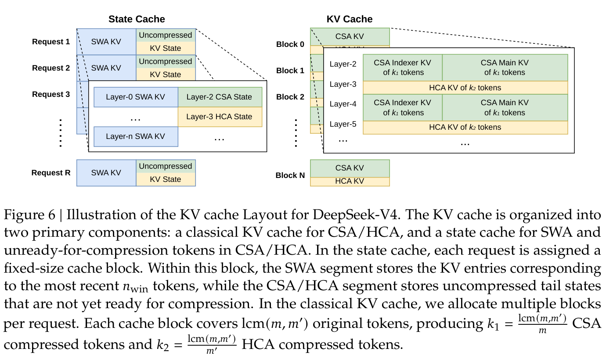
（续上页）
这些维度的 embedding 大小与主 attention 不同。CSA 和 HCA 的压缩技术分别将序列长度缩减为原来的 1/m 和 1/m′，从而减少总体 KV cache 大小。因此，各层的 KV cache 大小不同。此外，SWA 层也使用不同的 KV cache 大小，具有独立的缓存命中与淘汰策略。压缩分支每 \(m\) 个 token 生成一个 KV 条目。当剩余 token 数不足以压缩时，必须在缓冲区中保留所有待处理 token 及其关联隐藏状态，直到能够执行压缩。这些缓冲 token 表示由位置上下文决定的序列状态，也由 KV cache 框架管理。
混合 attention KV cache 管理的挑战。混合 attention 机制违背了 PagedAttention 及其变体的基本假设。尽管近期混合 KV cache 管理算法，例如 Jenga（Zhang et al., 2025a）和 Hymba（Dong et al., 2025），面向通用混合 attention 模型或特定结构，仍有两个主要障碍阻止在 PagedAttention 框架下整合所有层的 KV cache：
为高效管理 DeepSeek-V4 的 KV cache，我们设计了相应策略，克服这两个挑战。
SWA 与未压缩尾部 token 的状态缓存。为应对第一个障碍，我们采用另一种缓存管理机制。由于 SWA 旨在有限 KV cache 大小下提升性能，将其与压缩分支的未压缩尾部 token 一起视作 SSM 是合理的。因此，相应 KV cache 可被……（接下页）
（续上页）
视为仅依赖当前位置的序列专属状态。因此，我们预先分配固定且有限大小的状态缓存池，动态分配给各序列。
稀疏 attention 内核协同设计。对于第二个障碍，传统高性能 attention 内核通常假定每个块包含固定数量 B 个 token，以优化性能；在 CSA 中对应 B · m 个原始 token，在 HCA 中对应 B · m′ 个原始 token。采用高性能稀疏 attention 内核后，不同层可以支持每块不同的 token 数，而不降低性能。这需要协同设计 KV cache 布局与稀疏 attention 内核。例如，将块填充到与缓存行对齐，可以提高性能。因此，对于压缩率为 m 的 CSA 和压缩率为 m′ 的 HCA，每块原始 token 数可以是两种压缩率最小公倍数 lcm(m, m′) 的任意倍数。
提供 DeepSeek-V4 服务时，我们使用磁盘 KV cache 存储机制，消除共享前缀请求的重复 prefill。对于 CSA/HCA 的压缩 KV 条目与 SWA 的未压缩 KV 条目，分别设计存储管理方案。
对于 CSA 和 HCA，直接将所有压缩 KV 条目存储到磁盘。请求命中已存储前缀时，读取并复用对应前缀的压缩 KV 条目，直至最后一个完整压缩块。特别地，对于尾部不完整块中的前缀 token，仍需重计算，以恢复未压缩 KV 条目，因为 CSA 和 HCA 的未压缩 KV 条目并不存储。
由于 SWA KV 条目未压缩且存在于每一层，其体积约为 CSA 与 HCA 压缩 KV 条目的 8 倍。为高效处理这些大体积 SWA KV 条目，我们提出并实现三种不同的磁盘 SWA KV 条目管理策略，分别在存储开销与冗余计算之间作不同权衡：
根据具体部署场景，我们选择最合适的策略，实现期望的存储与计算权衡。
在 DeepSeek-V3 预训练数据的基础上，我们努力构建更多样、更高质量且有效上下文更长的训练语料。持续改进数据构建流程。对于来自网页的数据，实施过滤策略，去除批量自动生成及模板化内容，以降低模型坍塌风险（Zhu et al., 2024）。数学与编程语料仍是训练数据的核心组成部分，我们在中期训练阶段加入 agent 数据，进一步增强 DeepSeek-V4 系列的编程能力。对于多语言数据，为 DeepSeek-V4 构建了更大语料，提高其对不同文化长尾知识的掌握。对于 DeepSeek-V4，我们尤其重视长文档数据整理，优先选择科学论文、技术报告及其他体现独特学术价值的材料。综合以上内容，预训练语料超过 32T token，包含数学内容、代码、网页、长文档及其他高质量类别。
预训练数据大体沿用 DeepSeek-V3 的预处理策略。分词方面，在 DeepSeek-V3 tokenizer 基础上引入少量用于上下文构建的特殊 token，词表大小仍为 128K。也继承 DeepSeek-V3 的 token 拆分（DeepSeek-AI, 2024）和中间填充（FIM）（DeepSeek-AI, 2024）策略。受 Ding et al.（2024）启发，将不同来源文档打包为合适序列，尽量减少样本截断。与 DeepSeek-V3 不同，我们在预训练期间采用样本级 attention 掩码。
DeepSeek-V4-Flash。Transformer 层数设为 43，隐藏维度 \(d\) 设为 4096。前两层使用纯 SWA，后续层交错使用 CSA 和 HCA。对于 CSA，压缩率 \(m\) 设为 4，索引器查询头数 \(n_{h}^{I}\) 设为 64，索引器头维度 \(c_{I}\) 设为 128，稀疏 attention 选择的 KV 条目数（即 attention top-k）设为 512。对于 HCA，压缩率 \(m\)′ 设为 128。对于 CSA 和 HCA，查询头数 \(n_{h}\) 均设为 64，头维度 \(c\) 为 512，查询压缩维度 \(d_{c}\) 为 1024。输出投影组数 \(g\) 设为 8，每个中间 attention 输出维度 \(d_{g}\) 设为 1024。附加 SWA 分支的窗口大小 \(n_{win}\) 设为 128。所有 Transformer 块都使用 MoE 层，但前 3 个 MoE 层使用 Hash 路由策略。每个 MoE 层包含 1 个共享专家和 256 个路由专家，每个专家中间隐藏维度为 2048。每个 token 激活 6 个路由专家。MTP 深度设为 1。对于 mHC，扩展因子 \(n_{hc}\) 设为 4，Sinkhorn-Knopp 迭代次数 \(t_{max}\) 设为 20。在此配置下，DeepSeek-V4-Flash 总参数量为 284B，每个 token 激活 13B。
DeepSeek-V4-Pro。Transformer 层数设为 61，隐藏维度 \(d\) 设为 7168。前两层使用 HCA，后续层交错使用 CSA 与 HCA。对于 CSA，压缩率 \(m\) 设为 4，索引器查询头数 \(n_{h}^{I}\) 为 64，索引器头维度 \(c_{I}\) 为 128，稀疏 attention 选择的 KV 条目数（即 attention top-k）为 1024。对于 HCA，压缩率 \(m\)′ 设为 128。对于 CSA 和 HCA，查询头数 \(n_{h}\) 均设为 128，头维度 \(c\) 为 512，查询压缩维度 \(d_{c}\) 为 1536。输出投影组数 \(g\) 为 16，每个中间 attention 输出维度 \(d_{g}\) 为 1024。附加 SWA 分支的窗口大小 \(n_{win}\) 为 128。所有 Transformer 块使用 MoE 层，但前 3 个 MoE 层使用 Hash 路由。每个 MoE 层包含 1 个共享专家和 384 个路由专家，每个专家的中间隐藏维度为 3072。每个 token 激活 6 个路由专家。MTP 深度设为 1。对于 mHC，扩展因子 \(n_{hc}\) 为 4，Sinkhorn-Knopp 迭代次数 \(t_{max}\) 为 20。在此配置下，DeepSeek-V4-Pro 总参数量为 1.6T，每个 token 激活 49B。
DeepSeek-V4-Flash。大多数参数使用 Muon 优化器（Jordan et al., 2024; Liu et al., 2025），但 embedding 模块、预测头模块及所有 RMSNorm 模块的权重使用 AdamW（Loshchilov and Hutter, 2017）。AdamW 超参数设为 \(\beta _{1} = 0.9\)、\(\beta _{2} = 0.95\)、\(\epsilon = 10^{-20}\)、weight_decay = 0.1。Muon 的动量设为 0.95，权重衰减为 0.1，将每个更新矩阵的 RMS 重新缩放为 0.18，以复用 AdamW 学习率。我们使用 32T token 训练 DeepSeek-V4-Flash，与 DeepSeek-V3 一样，也采用 batch 大小调度策略：将 batch 大小（按 token 计）从较小值增至 75.5M，并在大部分训练期间保持 75.5M。学习率在前 2000 步线性 warmup，大部分训练期间维持 \(2.7 \times 10^{-4}\)。训练接近结束时，按余弦调度将学习率衰减到 \(2.7 \times 10^{-5}\)。训练从 4K 序列长度开始，逐步扩展至 16K、64K 和 1M。对于稀疏 attention 设置，先在最初 1T token 上用稠密attentionwarmup模型，在序列长度达到 64K 时引入稀疏 attention，并在剩余训练中保持使用。引入 attention 稀疏性时，先设置一个短阶段，warmup CSA 的 lightning indexer，再在大部分训练期间使用稀疏 attention 训练模型。对于无辅助损失负载均衡，偏置更新速度设为 0.001。均衡损失的权重为 0.0001，以避免单条序列内极端不均衡。大部分训练期间 MTP 损失权重为 0.3，开始学习率衰减时改为 0.1。
DeepSeek-V4-Pro。除超参数具体数值外，DeepSeek-V4-Pro 训练设置与 DeepSeek-V4-Flash 基本一致。大多数参数采用 Muon，但 embedding 模块、预测头模块和所有 RMSNorm 模块权重使用 AdamW。AdamW 与 Muon 超参数同 DeepSeek-V4-Flash。使用 33T token 训练 DeepSeek-V4-Pro，同样采用 batch 大小调度策略，最大 batch 为 94.4M token。学习率调度与 DeepSeek-V4-Flash 基本相同，但峰值设为 \(2.0 \times 10^{-4}\)，最终学习率为 \(2.0 \times 10^{-5}\)。训练也从 4K 序列长度开始，逐步……（接下页）
（续上页）
扩展到 16K、64K 和 1M。相较 DeepSeek-V4-Flash，DeepSeek-V4-Pro 最初的稠密 attention 阶段更长，引入稀疏 attention 的策略与 Flash 相同，遵循两阶段训练方法。对于无辅助损失负载均衡，偏置更新速度设为 0.001。均衡损失权重为 0.0001，以避免单条序列内极端不均衡。大部分训练期间 MTP 损失权重为 0.3，学习率开始衰减时改为 0.1。
训练万亿参数 MoE 模型面临显著稳定性挑战，DeepSeek-V4 系列也不例外。我们在训练期间遇到明显的不稳定问题。简单回滚虽能暂时恢复训练状态，却无法作为长期方案，因为不能防止 loss spike 再次出现。经验上，我们发现尖峰发生始终与 MoE 层中的 outlier 相关，而路由机制本身似乎进一步加剧这些 outlier 的出现。因此，我们尝试从两个维度解决问题：打破路由引起的恶性循环，以及直接抑制 outlier。幸运的是，我们发现两种实用技术能够有效维持训练稳定性。虽然对其底层机制的全面理论理解目前仍是开放问题，我们仍公开分享，推动社区进一步探索。
Anticipatory Routing。我们发现，将主干网络和路由网络的同步更新解耦，可显著改善训练稳定性。因此，在步骤 \(t\)，使用当前网络参数 \(\theta _{t}\) 计算特征，但路由索引使用历史网络参数 \(\theta _{t-\Delta t}\) 计算并应用。实际中，为避免两次加载模型参数的开销，在步骤 \(t-\Delta t\) 提前取得步骤 \(t\) 的数据。“预先”计算并缓存后续步骤 \(t\) 将使用的路由索引，因此将此方法命名为 Anticipatory Routing。我们还在基础设施层面进行了大量优化。首先，由于预计算路由索引只需对数据执行一次前向传播，我们精心编排流水线执行以及计算与 EP 通信的重叠，成功将 Anticipatory Routing 的额外实际耗时限制在约 20%。第二，引入自动检测机制，仅当出现 loss spike 时触发短回滚并启用 Anticipatory Routing；运行一段时间后，系统恢复标准训练。最终，这种动态应用使我们能以可忽略的总体额外训练开销避免 loss spike，同时不损害模型性能。
SwiGLU 限幅。既有文献（Bello et al., 2017; Riviere et al., 2024）已明确使用限幅约束数值范围，从而增强训练稳定性。在实际训练中，我们通过经验发现，应用 SwiGLU 限幅（OpenAI, 2025）能有效消除 outlier，大幅帮助稳定训练过程，且不影响性能。在 DeepSeek-V4-Flash 和 DeepSeek-V4-Pro 的整个训练过程中，将 SwiGLU 线性分量限制于 [−10, 10]，并将门控分量的上界限制为 10。
评测基础模型时，我们考虑覆盖四个关键维度的基准：世界知识、语言理解与推理、编程与数学，以及长上下文处理。
世界知识基准包括 AGIEval（Zhong et al., 2023）、C-Eval（Huang et al., 2023）、CMMLU（Li et al., 2023）、MMLU（Hendrycks et al., 2020）、MMLU-Redux（Gema et al., 2024）、MMLU-Pro（Wang et al., 2024b）、MMMLU（OpenAI, 2024a）、MultiLoKo（Hupkes and Bogoychev, 2025）、Simple-QA verified（Haas et al., 2025）、SuperGPQA（Du et al., 2025）、FACTS Parametric（Cheng et al., 2025）和 TriviaQA（Joshi et al., 2017）。
语言理解与推理基准包括 BigBench Hard（BBH）（Suzgun et al., 2022）、DROP（Dua et al., 2019）、HellaSwag（Zellers et al., 2019）、CLUEWSC（Xu et al., 2020）和 WinoGrande（Sakaguchi et al., 2019）。
编程与数学基准包括 BigCodeBench（Zhuo et al., 2025）、HumanEval（Chen et al., 2021）、GSM8K（Cobbe et al., 2021）、MATH（Hendrycks et al., 2021）、MGSM（Shi et al., 2023）和 CMath（Wei et al., 2023）。
长上下文基准包括 LongBench-V2（Bai et al., 2025b）。
表 1 详细比较 DeepSeek-V3.2、DeepSeek-V4-Flash 和 DeepSeek-V4-Pro 的基础模型，所有模型都在统一内部框架中，以严格一致的设置评测。
将 DeepSeek-V4-Flash-Base 与 DeepSeek-V3.2-Base 比较，可看出显著的效率优势。尽管激活参数量和总参数量都小得多，DeepSeek-V4-Flash-Base 仍在广泛基准上优于 DeepSeek-V3.2-Base。这一优势在世界知识任务和具有挑战性的长上下文场景中尤其明显。这些结果说明，DeepSeek-V4-Flash-Base 的架构改进、数据质量提升与训练优化，即使在更紧凑的参数预算下也能带来更优性能，在多数评测中有效超越更大的 DeepSeek-V3.2-Base。
此外，DeepSeek-V4-Pro-Base 的能力进一步实现决定性飞跃，在几乎所有方面都领先于 DeepSeek-V3.2-Base 与 DeepSeek-V4-Flash-Base。随着几乎所有类别的提升，DeepSeek-V4-Pro-Base 在最具挑战性的基准上达到了 DeepSeek 基础模型的新性能高度。在知识密集型评测中，它取得大幅提升，也显著推进了长上下文理解。在大多数推理与代码基准上，DeepSeek-V4-Pro-Base 同样超过此前两个模型。这一全面提升确立了 DeepSeek-V4-Pro-Base 作为 DeepSeek 系列最强基础模型的地位，在知识、推理、编程与长上下文能力的各个方面超越前代。
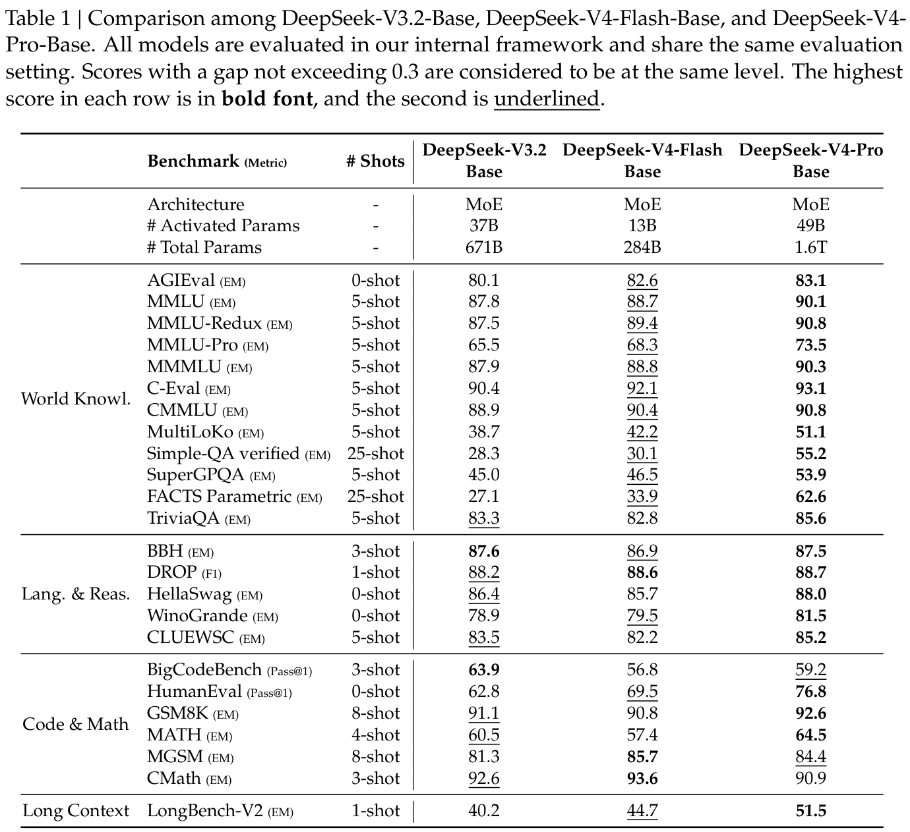
预训练后，我们进行后训练，得到 DeepSeek-V4 系列的最终模型。虽然训练流程大体沿用 DeepSeek-V3.2，但作出了一项关键方法替换：以 OPD（OPD；Gu et al., 2024; Lu and Lab, 2025）完全取代混合强化学习（RL）阶段。
我们通过改编 DeepSeek-V3.2 训练流程开发领域专项模型。具体而言，每个模型依次经过初始微调阶段，以及由领域专属提示词和奖励信号引导的强化学习（RL）进行优化。在 RL 阶段，采用 GRPO 算法，超参数与此前研究（DeepSeek-AI, 2025; DeepSeek-AI, 2025）保持高度一致。
推理投入。人们普遍认为，模型在推理任务上的表现根本上取决于投入的计算量。因此，我们在不同 RL 配置下训练不同专项模型，以便开发针对不同推理能力优化的模型。如表 2 所示，DeepSeek-V4-Pro 和 DeepSeek-V4-Flash 均支持三种特定推理投入模式。对于每种模式，在 RL 训练中采用不同长度惩罚与上下文窗口，从而产生不同长度的推理输出 token。为整合这些推理模式，我们采用由 <think> 和 </think> token 标记的专用响应格式。此外，对于 “Think Max” 模式，在系统提示词开头添加特定指令，引导模型推理过程，如表 3 所示。
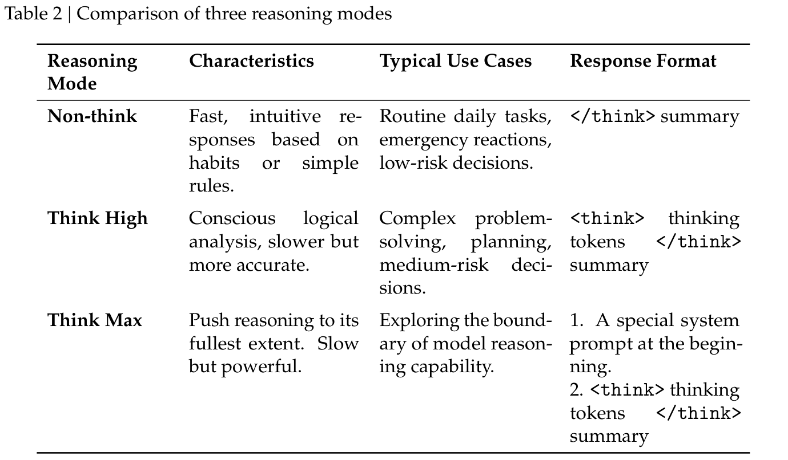
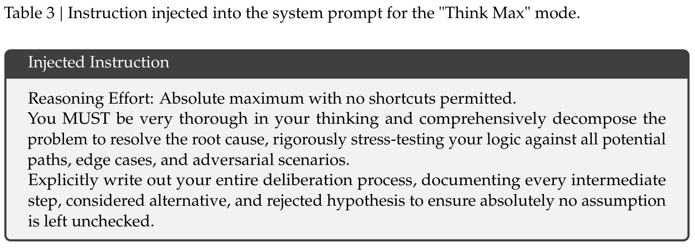
GenRM。通常，易于验证的任务可通过简单的规则验证器或测试用例有效优化。相比之下，难以验证的任务传统上依赖 RLHF，需要大量人工标注以训练标量 RM。然而，在 DeepSeek-V4 系列后训练阶段，（接下页）
（续上页）
我们舍弃了这些传统标量 RM。为应对难以验证的任务，改为整理评分准则引导的 RL 数据，并使用 GenRM（GRM）评估策略轨迹。关键在于，我们也直接对 GRM 本身进行 RL 优化。在此范式中，actor 网络原生承担 GRM 的功能，使模型的评估（判断）能力与常规生成能力一起优化。通过统一这些角色，模型内部推理能力自然融入评估过程，产生高度稳健的评分。此外，该方法仅需少量多样化人工标注就能达到更优性能，因为模型利用自身逻辑泛化到复杂任务。
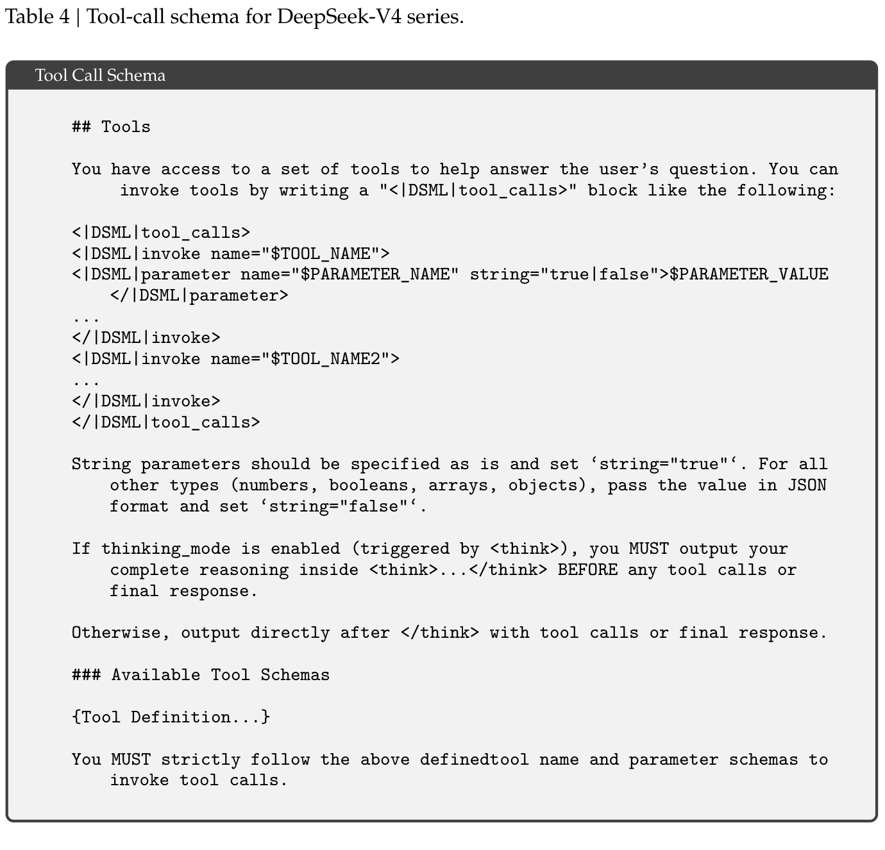
工具调用格式与特殊 token。与上一版本一致，我们使用专门的 <think></think> 标签区分推理路径。在 DeepSeek-V4 系列中，引入新的工具调用格式，采用特殊 “|DSML|” token，并使用基于 XML 的工具调用格式，如表 4 所示。实验表明，XML 格式有效缓解转义失败并减少工具调用错误，为模型与工具交互提供更稳健的接口。
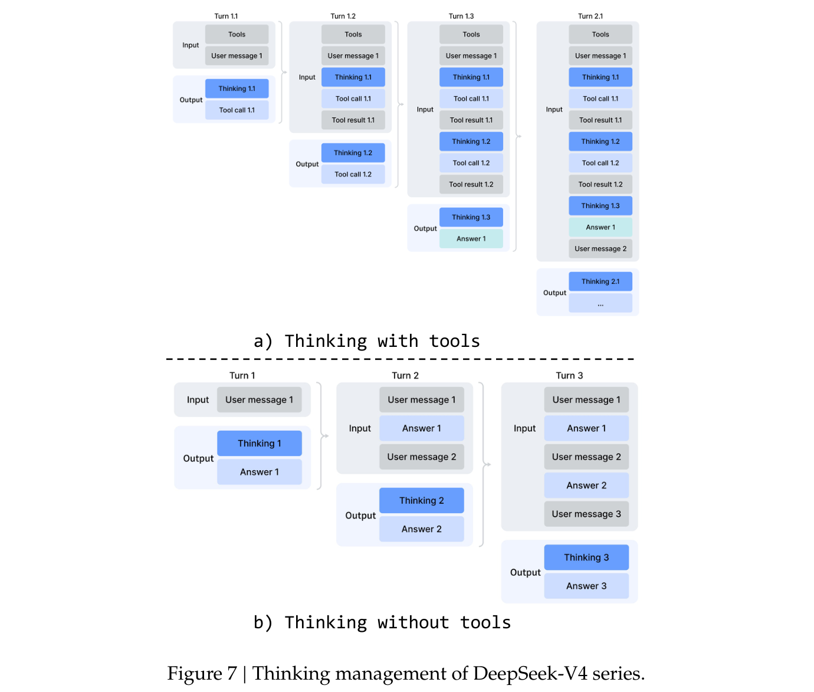
交错思考。DeepSeek-V3.2 引入上下文管理策略：跨工具结果轮次保留推理轨迹，但在新的用户消息到来时丢弃。虽然有效，这仍在复杂 agent 工作流中造成不必要的 token 浪费：每个新的用户轮次都会清空所有累积推理内容，迫使模型从头重建问题解决状态。利用 DeepSeek-V4 系列扩展至 1M token 的上下文窗口，我们进一步改进此机制，最大限度提高 agent 环境中交错思考的有效性：
与 DeepSeek-V3.2 一样，通过用户消息模拟工具交互的 agent 框架（如 Terminus），可能不会触发工具调用上下文路径，因此可能无法受益于增强的……（接下页）
（续上页）
推理持久性。对于这些架构，我们仍推荐非思考模型。
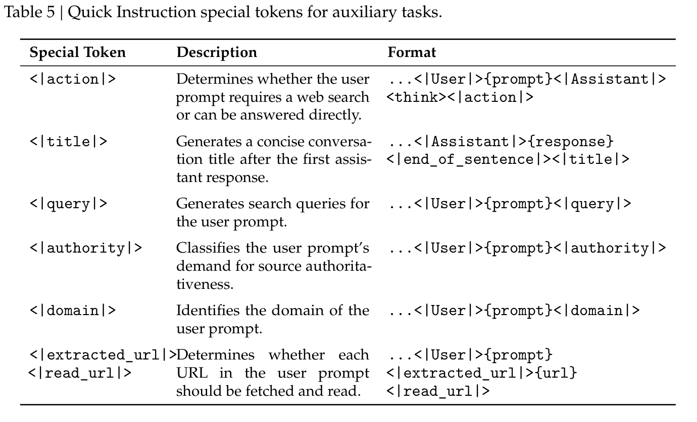
快捷指令。在聊天机器人场景中，生成响应前必须执行若干辅助任务，例如判断是否触发网页搜索、识别意图等。传统上，这些任务由独立小模型处理，由于不能复用已有 KV cache，需冗余 prefill。为克服这一限制，我们引入快捷指令（Quick Instruction）。直接在输入序列后追加一组专用特殊 token，每个 token 对应一项辅助任务。通过直接复用已计算的 KV cache，此机制完全避免冗余 prefill，并允许生成搜索查询、判断权威性与领域等任务并行执行。因此，此方法显著降低用户感知的 TTFT，也消除了维护和迭代额外小模型的工程开销。支持的快捷指令 token 汇总于表 5。
通过专项微调与强化学习训练多个领域专项模型后，我们采用 MOPD（OPD；Gu et al., 2024; Lu and Lab, 2025）作为将专项能力整合进最终模型的主要技术。OPD 已成为一种有效的后训练范式，能将领域专项模型的知识与能力高效迁移到单个统一模型。其方法是让学生在自身生成的轨迹上，学习教师模型的输出分布。形式上，给定 \(N\) 个专项模型 \(\{\pi _{E1}, \pi _{E2}, \ldots , \pi _{EN}\}\)，OPD 目标函数定义为：
其中，\(w_{i}\) 表示每个专项模型分配的权重，通常由其相对重要性确定。计算反向 KL 损失 \(D_{\operatorname{KL}}(\pi _{\theta} \Vert \pi _{Ei})\) 需要……（接下页）
（续上页）
从学生 \(\pi _{\theta}\) 采样训练轨迹，以维持 on-policy 学习。底层逻辑确保统一策略 \(\pi _{\theta}\) 选择性学习与当前任务上下文相关的专项模型，例如数学推理任务对齐数学专项模型，编程任务对齐编程专项模型。通过此机制，原本存在于不同专项模型权重中的知识，经 logit 级对齐整合到统一参数空间，实际避免了传统权重合并或混合 RL 技术中常见的性能退化。此阶段使用覆盖不同领域的十余个教师模型，蒸馏单个学生模型。
处理上述 OPD 目标时，既有工作通常将全词表 KL 损失简化为每个 token 位置上的 token 级 KL 估计，并 on-policy 损失计算中将 \(\operatorname{sg}[\operatorname{log}(\pi _{Ei}(y_{t}|x,y_{<t})/\pi _{\theta}(y_{t}|x,y_{<t}))]\)（sg 表示停止 gradient 操作）替代为每 token 优势估计，复用 RL 框架。虽然资源高效，这种方法会导致 gradient 估计的高方差，且常引发训练不稳定。因此，我们在 OPD 中采用全词表 logit 蒸馏。计算反向 KL 损失时保留完整 logit 分布，可以获得更稳定的 gradient 估计，并确保忠实蒸馏教师知识。下一节描述使全词表 OPD 能够大规模实施的工程工作。
后训练基础设施基于为 DeepSeek-V3.2 开发的可扩展框架。具体而言，我们整合了第 3.4 节所述的相同分布式训练技术栈，以及此前介绍的、用于高效自回归采样的轨迹生成引擎。在此基础上，本工作引入以下主要增强。这些设计能够高效执行超长上下文 RL 和涉及十余个不同教师模型的 OPD 整合任务，从而显著加快模型发布的迭代周期。
为实现推理加速并减少部署时的内存流量，我们在后训练阶段引入 QAT（Jacob et al., 2018），使模型，包括教师模型与参考模型，适应量化引入的精度下降。将 FP4（MXFP4）量化（Rouhani et al., 2023）用于两个组件：（1）MoE 专家权重，这是 GPU 内存占用的主要来源（OpenAI, 2025）；（2）CSA 索引器中的查询–键（QK）路径，其 QK 激活完全以 FP4 缓存、加载与相乘，加速长上下文场景中的 attention 分数计算。此外，在此 QAT 过程中进一步将索引分数 \(I_{:,:}\) 从 FP32 量化到 BF16。此优化使 top-k 选择器获得 2 倍加速，同时保持 KV 条目 99.7% 的召回率。
对于 MoE 专家权重，遵循 QAT 常见做法，优化器维护的 FP32 主权重先量化为 FP4，再反量化回 FP8 用于计算。值得注意的是，FP4 到 FP8 的反量化是无损的。这是因为 FP8（E4M3）相较 FP4（E2M1）多出 2 个指数位，提供更大的动态范围。因此，只要每个 FP8 量化块（128 × 128 小块）内 FP4 子块（1 × 32 小块）的最大与最小缩放因子之比不超过某个阈值，细粒度缩放信息就可完全被 FP8 扩展的动态范围吸收。我们通过经验验证当前权重满足此条件。这……（接下页）
（续上页）
使整个 QAT 流程无需任何修改即可完全复用现有 FP8 训练框架。反向传播时，基于前向传播所用的相同 FP8 权重计算 gradient，直接传回 FP32 主权重，相当于对量化操作应用直通估计器（STE）。这也避免了对转置权重重新量化。
在不涉及反向传播的推理阶段及 RL 训练的轨迹生成阶段，我们直接使用原生 FP4 量化权重，而不是模拟量化。这确保采样时模型行为与线上部署完全一致，同时减少内核内存加载，获得实际加速并显著降低内存占用。CSA 索引器的 QK 路径也采用类似处理。
我们的框架支持全词表 OPD，教师数量实际上没有上限，每个教师都可能包含万亿参数。为此，所有教师权重卸载到集中式分布式存储，在教师前向传播期间按需加载，并采用类似 ZeRO 的参数分片缓解 I/O 和 DRAM 压力。此外，即使写入磁盘，对所有教师朴素地显式生成词表大小 |V| > 100k 的 logits 也难以承受。我们在前向传播期间只将教师最后一层隐藏状态缓存于集中缓冲区，以解决这一问题。训练时，取回缓存状态，经对应预测头模块即时重建完整 logits。此设计的重计算开销可忽略，同时完全规避显式生成 logits 的内存负担。为降低教师预测头的 GPU 内存占用，数据分发时按教师索引排列训练样本。这样，每个不同教师头在每个 mini-batch 中只加载一次，且任意时刻设备内存中最多只驻留一个教师头。所有参数和隐藏状态的加载与卸载均在后台异步进行，不阻塞关键路径上的计算。最后，使用专门的 TileLang 内核精确计算教师与学生 logits 之间的 KL 散度，加速计算并减少动态内存分配。
为最大限度利用 GPU 资源，并为高优先级任务快速提供硬件，我们的 GPU 集群采用集群级抢占式任务调度器，任意运行中的任务都可随时被抢占。此外，大规模 GPU 集群中硬件故障也很常见。为此，我们为 RL/OPD 轨迹生成实现了可抢占、容错的 LLM 生成服务。
具体而言，为每个生成请求实现 token 粒度预写日志（WAL）。请求每生成一个新 token，就立即追加到该请求的 WAL。抢占时暂停推理引擎，保存未完成请求的 KV cache。恢复时，使用持久化 WAL 与保存的 KV cache 继续 decoding。即使发生致命硬件错误，也可使用 WAL 中持久化 token 重新运行 prefill 阶段，重建 KV cache。
重要的是，从头重新生成未完成请求在数学上是不正确的，因为会引入长度偏差。由于较短响应更可能在中断中幸存，从头重新生成会使模型更倾向于在……（接下页）
（续上页）
每次中断时产生较短序列。若推理技术栈具有 batch 不变性与确定性，也可通过为采样器所用伪随机数生成器保持一致的种子，再次生成来解决此正确性问题。但仍会产生重新运行 decoding 阶段的额外成本，因此效率远低于 token 粒度 WAL 方法。
我们引入针对性优化，使百万 token 序列上的 RL 和 OPD 高效运行。轨迹生成阶段使用第 5.2.3 节详述的可抢占、容错服务。推理和训练阶段，将轨迹数据格式拆分为轻量元数据和重量级逐 token 字段。数据分发时，可以加载全部轨迹数据的元数据，以进行全局打乱和打包布局计算。重量级逐 token 字段通过共享内存数据加载器读取，消除节点内数据冗余，并在 mini-batch 粒度上消费后立即释放，显著降低 CPU 和 GPU 内存压力。设备上的 mini-batch 数量根据工作负载动态确定，从而高效权衡计算吞吐量与 I/O 重叠。
为满足后训练与评测中 agent AI 的多样执行需求，我们构建生产级沙箱平台 DeepSeek Elastic Compute（DSec）。DSec 包含三个 Rust 组件：API 网关（Apiserver）、每台主机的代理（Edge）与集群监控器（Watcher）。这些组件通过定制 RPC 协议互连，并在 3FS 分布式文件系统（DeepSeek-AI, 2025）上水平扩展。生产环境中，单个 DSec 集群管理数十万个并发沙箱实例。
DSec 的设计由四个观察驱动：（1）agent 工作负载高度异构，从轻量函数调用到完整软件工程流水线，对操作系统与安全要求各异；（2）环境镜像数量多、体积大，但必须快速加载并支持迭代定制；（3）高密度部署要求高效利用 CPU 与内存；（4）沙箱生命周期必须协调 GPU 训练调度，包括抢占与基于 checkpoint 的恢复。基于这些观察，下面分别阐述 DSec 的四项核心设计。
统一接口下的四种执行底座。DSec 提供单个 Python SDK（libdsec），抽象四种执行底座。Function Call 将无状态调用分发到 warmup 容器池，消除冷启动开销。Container 完全兼容 Docker，使用 EROFS（Gao et al., 2019）按需加载以高效组装镜像。基于 Firecracker（Agache et al., 2020）的 microVM，为安全敏感的高密度部署添加虚拟机级隔离。基于 QEMU（Bellard, 2005）的 fullVM 支持任意客户操作系统。四者共享相同 API：命令执行、文件传输与 TTY 访问，仅需更改一个参数即可切换。
通过分层存储快速加载镜像。DSec 通过分层按需加载，在快速启动与大量且持续增长的环境镜像之间取得兼顾。对于容器，基础镜像和文件系统提交存储为由 3FS 支撑的只读 EROFS 层，直接挂载到 overlay lowerdirs。挂载时，文件元数据已准备在本地磁盘上；（接下页）
（续上页）
同时，数据块按请求从 3FS 获取。对于 microVM，DSec 使用 overlaybd（Li et al., 2020）磁盘格式：只读基础层位于 3FS 上，供实例间共享，写入则进入本地写时复制层。这些快照可以链式组合，便于高效版本管理和毫秒级恢复。
大规模并发下的密度优化。为支持每个集群数十万个沙箱，DSec 解决两个资源瓶颈。首先，缓解虚拟化环境中的重复页缓存占用，并应用内存回收实现安全超额分配。第二，缓解容器运行时的自旋锁争用，从而降低每个沙箱的 CPU 开销，显著提高每台主机的部署密度。
轨迹日志与抢占安全恢复。DSec 为每个沙箱维护全局有序轨迹日志，持久记录每次命令调用及其结果。轨迹有三项用途：（1）客户端快进：训练任务被抢占时，仍保留沙箱资源；恢复时，DSec 回放此前已完成命令的缓存结果，加快任务恢复，同时防止重新执行非幂等操作产生错误；（2）细粒度来源追踪：每次状态变化的来源及对应结果均可追踪；（3）确定性回放：可根据轨迹忠实重现任意历史会话。
知识与推理。知识与推理数据集包括 MMLU-Pro（Wang et al., 2024b）、GPQA（Rein et al., 2023）、Human Last Exam（Phan et al., 2025）、Simple-QA Verified（Haas et al., 2025）、Chinese-SimpleQA（He et al., 2024）、LiveCodeBench-v6（Jain et al., 2024）、CodeForces（内部基准）、HMMT 2026 Feb、Apex（Balunović et al., 2025）、Apex Shortlist（Balunović et al., 2025）、IMOAnswerBench（Luong et al., 2025）和 PutnamBench（Tsoukalas et al., 2024）。
对于代码，在 LiveCodeBench-v6 和内部 Codeforces 基准上评测 DeepSeek-V4 系列。对于 Codeforces，收集了 14 场 Codeforces Division 1 比赛，共 114 道题（2025 年 5 月至 11 月）。Elo 评分计算如下：每场比赛，每道题生成 32 个候选解。对每道题独立从中无放回抽取 10 个解，随机排序形成提交序列。每次提交使用领域专家构建的测试集判定。已解决题目的得分遵循 OpenAI（2025）的惩罚方案：模型获得此前失败次数相同、且解决了同一题的人类参赛者得分的中位数。由此为每个采样提交序列得到比赛总分，再转化为比赛排名，随后通过标准 Codeforces 评分系统转化为估计评分。单场比赛的期望评分定义为：对每道题 10 次提交的所有可能随机选择与排序，取估计评分的期望。模型总评分是所有 14 场比赛的单场期望评分平均值。
对于推理和知识任务，温度设为 1.0，Non-think、High 和 Max 模式的上下文窗口分别为 8K、128K 与 384K token。对于数学任务，例如 HMMT、IMOAnswerBench、Apex 和 HLE，使用以下模板评测：“{question}\n请逐步推理，并将最终答案放在……（接下页）
（续上页评测模板）
\boxed{} 中。”对于数学任务上的 DeepSeek-V4-Pro-Max，使用以下模板引导更深入推理：“解决下列问题。问题可能要求你证明一个陈述，或给出一个答案。如果需要求出答案，你应得出该答案，并且最终解答还应严格证明该答案有效。\n\n{question}”。
对于形式化数学任务，我们在 Lean v4.28.0-rc1（Moura and Ullrich, 2021）上以 agent 设置评测，提供 Lean 编译器和语义策略搜索引擎，采用最大推理投入，最多运行 500 次工具调用。此外，还评测计算更密集的流水线：先生成自然语言候选解，并通过自验证（Shao et al., 2025）过滤，再将保留的解作为指导，交给形式化 agent 证明对应 Lean 陈述。此设计用非形式化推理改善探索，同时通过形式化验证保证严格正确性。两种设置中，仅当严格验证器 Comparator 接受提交时，才计为正确。
K2.6 和 GLM-5.1 的一些条目留空，因为其 API 过于繁忙，无法返回我们的查询响应。
1M token 上下文。由于 DeepSeek-V4 系列支持 1M token 上下文，我们选择 OpenAI MRCR（OpenAI, 2024b）和 CorpusQA（Lu et al., 2026）作为基准，评估长上下文场景中的模型性能。为统一所有模型配置，我们在这些任务上重新评测 Claude Opus 4.6 和 Gemini 3.1 Pro。未评测 GPT-5.4，因为其 API 对大部分查询未能响应。
agent。agent 数据集包括 Terminal Bench 2.0（Merrill et al., 2026）、SWE-Verified（OpenAI, 2024e）、SWE Multilingual（Yang et al., 2025）、SWE-Pro（Deng et al., 2025）、BrowseComp（Wei et al., 2025）、MCPAtlas 的公开评测集（Bandi et al., 2026）、GDPval-AA（AA, 2025; Patwardhan et al., 2025）和 Tool-Decathlon（Li et al., 2025）。
对于代码 agent 任务（SWE-Verified、Terminal-Bench、SWE-Pro、SWE Multilingual），使用内部开发的评测框架评估 DeepSeek-V4 系列。框架提供最小工具集：bash 工具与文件编辑工具。最大交互步数为 500，最大上下文长度为 512K token。关于 Terminal-Bench 2.0，我们认可 GLM-5.1 指出的环境相关问题。不过，为保持一致，仍报告原始 Terminal-Bench 2.0 数据集上的性能。在 Terminal-Bench 2.0 Verified 子集上，DeepSeek-V4-Pro 得分约为 72.0。
对于搜索 agent 任务（BrowseComp、HLE w/ tool），也使用内部框架，配备 websearch 和 Python 工具，最大交互步数为 500，最大上下文长度为 512K token。对于 BrowseComp，采用与 DeepSeek-V3.2（DeepSeek-AI, 2025）相同的全部丢弃（discard-all）上下文管理策略。
DeepSeek-V4-Pro-Max 与其他闭源、开源模型的对比见表 6。我们还评测了 DeepSeek-V4-Flash 和 DeepSeek-V4-Pro 的不同模式，结果见表 7。
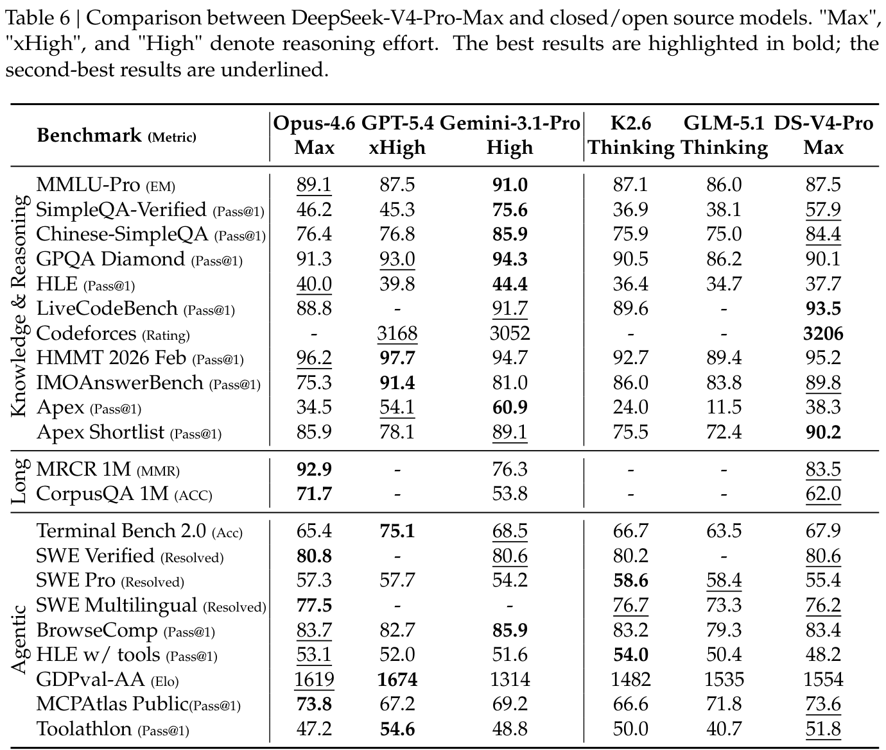
知识。在一般世界知识评测中，DeepSeek-V4-Pro 的最大推理投入模式 DeepSeek-V4-Pro-Max 确立了开源 LLM 的新最先进水平。SimpleQA-Verified 结果表明，它以 20 个绝对百分点的优势显著超越所有现有开源基线。尽管如此，目前仍落后于领先专有模型 Gemini-3.1-Pro。在教育知识与推理领域，DeepSeek-V4-Pro-Max 在 MMLU-Pro、GPQA 和 HLE 基准上略微领先 Kimi 和 GLM，但仍落后于领先专有模型。总体而言，DeepSeek-V4-Pro-Max 是增强开源模型世界知识能力的重要里程碑。
此外，在知识任务中，DeepSeek-V4-Flash 与 DeepSeek-V4-Pro 存在显著性能差距；这符合预期，因为更大的参数量有利于在预训练期间保留更多知识。值得注意的是，两者分配更高推理投入时，知识基准结果都会改善。
推理。DeepSeek-V4-Pro-Max 在各推理基准上超越所有此前开放模型，并在许多指标上匹敌最先进闭源模型；更小的 DeepSeek-V4-Flash-Max 在代码与数学推理任务上也超过此前最佳开源模型 K2.6-Thinking。同时，DeepSeek-V4-Pro 与 DeepSeek-V4-Flash 在编程……（接下页）
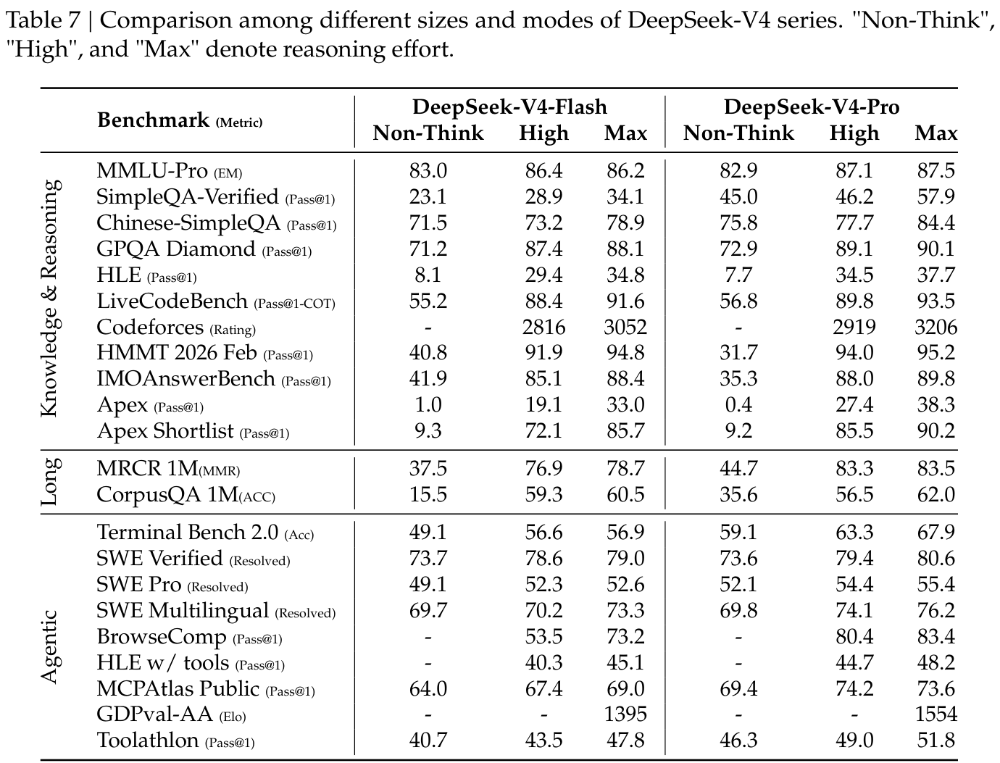
（续上页推理段落）
竞赛中表现出色。根据评测，其性能与 GPT-5.4 相当，这是开放模型首次在该任务上匹敌闭源模型。在 Codeforces 排行榜中，DeepSeek-V4-Pro-Max 目前在人类参赛者中排名第 23。DeepSeek-V4 在 agent 和计算密集两种设置下的形式化数学任务中也表现强劲。在 agent 设置下，如图 8 所示，达到最先进结果，超越 Seed Prover（Chen et al., 2025）等此前模型。使用计算更密集的流水线时，性能进一步提高，超越包括 Aristotle（Achim et al., 2025）在内的系统，匹敌该设置下已知最佳结果。
agent。DeepSeek-V4 系列在评测中展现了强大的 agent 性能。对于代码 agent 任务，DeepSeek-V4-Pro 的结果与 K2.6、GLM-5.1 相当，但这些开放模型均仍落后于闭源同类。DeepSeek-V4-Flash 在编程任务上逊于 DeepSeek-V4-Pro，尤其是 Terminal Bench 2.0。其他 agent 评测中也观察到类似趋势。值得注意的是，DeepSeek-V4-Pro 在 MCPAtlas 与 Toolathlon 上表现良好，这两个评测集涵盖多种工具与 MCP 服务，说明模型具有出色泛化能力，并非只在内部框架上表现良好。
1M token 上下文。在衡量上下文内检索的 MRCR 任务上，DeepSeek-V4-Pro 超越 Gemini-3.1-Pro，但仍落后于 Claude Opus 4.6。如图 9 所示，检索性能在 128K 上下文窗口内保持高度稳定。虽然性能……（接下页）
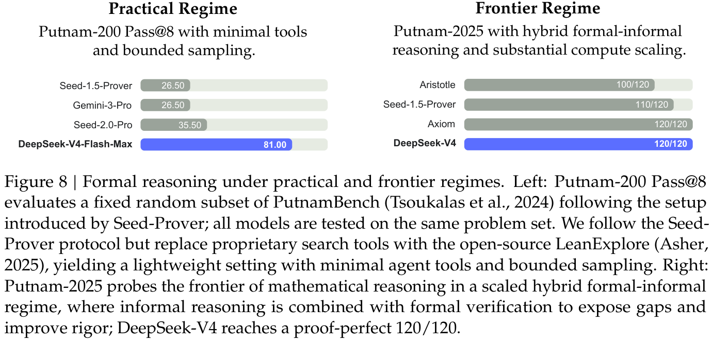
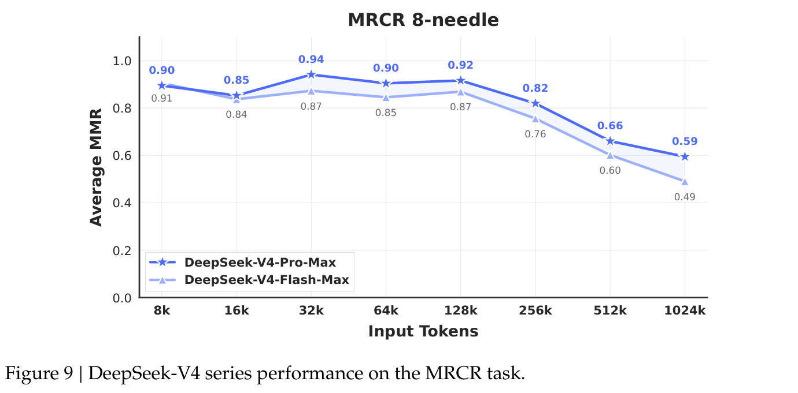
（续上页长上下文段落）
在超过 128K 后开始明显下降，但与专有和开源同类相比，模型在 1M token 下的检索能力依然相当强。与 MRCR 不同，CorpusQA 接近真实场景。评测结果同样表明 DeepSeek-V4-Pro 优于 Gemini-3.1-Pro。
推理投入。如表 7 所示，Max 模式在 RL 中使用更长上下文与更低长度惩罚，在最具挑战性的任务上优于 High 模式。图 10 对比 DeepSeek-V4-Pro、DeepSeek-V4-Flash 和 DeepSeek-V3.2 在代表性推理及 agent 任务上的性能与成本。通过扩展测试时计算，DeepSeek-V4 系列相较前代取得显著提升。此外，在 HLE 等推理任务上，DeepSeek-V4-Pro 展现出比 DeepSeek-V3.2 更高的 token 效率。
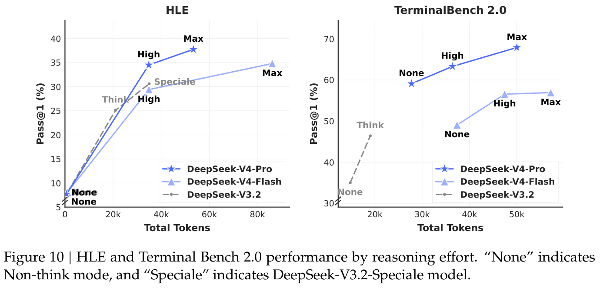
标准化基准往往难以捕捉多样真实任务的复杂性，造成测试结果与实际用户体验之间的差距。为弥合这一差距，我们开发了专有内部指标，优先考虑真实使用模式，而非传统基准。此方法确保优化转化为切实收益。评测框架专门针对 DeepSeek API 与聊天机器人的主要用例，使模型性能与实际需求一致。
中文写作是 DeepSeek 的主要用例之一。我们严格评测了应用写作与创意写作。表 12 对 DeepSeek-V4-Pro 与 Gemini-3.1-Pro 在应用写作任务上进行成对比较。这些任务由日常常见写作请求组成，提示词通常简洁直接。选择 Gemini-3.1-Pro 为基线，是因为其在我们的评测中是中文写作表现最好的外部模型。结果表明，DeepSeek-V4-Pro 优于基线，总体胜率为 62.7%，对方为 34.1%；主要原因是 Gemini 在中文写作场景中，有时会让自身固有风格偏好压过用户明确要求。
表 13 展示创意写作对比，沿指令遵循与写作质量两条轴评估。相较 Gemini-3.1-Pro，DeepSeek-V4-Pro 在指令遵循方面胜率为 60.0%，写作质量方面为 77.5%，显示指令遵循小幅改善，写作质量大幅提升。虽然 DeepSeek-V4-Pro 在总体用户案例分析中结果更优，但将评测限制于最具挑战性的提示词，尤其是涉及高复杂度约束或多轮场景的提示词时，会发现 Claude Opus 4.5 相较 DeepSeek-V4-Pro 仍保持性能优势。如表 14 所示，Claude Opus 4.5 胜率为 52.0%，对方为 45.9%。
搜索增强问答是 DeepSeek 聊天机器人的核心能力。在 DeepSeek 网页和应用中，“非思考”模式采用检索增强搜索（RAG），“思考”模式则使用 agent 搜索。
检索增强搜索。我们在客观与主观问答类别上成对评测 DeepSeek-V4-Pro 和 DeepSeek-V3.2。如表 11 所示，DeepSeek-V4-Pro 大幅超越 DeepSeek-V3.2，在两类任务中均展现一致优势。最明显提升出现在单值信息查找与攻略计划任务，表明 DeepSeek-V4-Pro 擅长定位准确事实答案，并从检索上下文综合形成结构化计划。不过，DeepSeek-V3.2 在对比与推荐任务上仍较有竞争力，说明 DeepSeek-V4-Pro 在需要对搜索结果作平衡、多视角推理的场景中仍有改善空间。
Agent 搜索。不同于标准 RAG，agent 搜索使模型能针对每个查询迭代调用搜索与抓取工具，显著提高总体搜索性能。对于 DeepSeek-Chat 的思考模式，我们优化了 agent 搜索功能，使其在预定义“思考预算”内最大化响应准确性。如表 9 所示，agent 搜索始终优于 RAG，尤其在复杂任务上。此外，其成本仍然高效，仅比标准 RAG 略贵（见表 10）。
为严格评估模型在复杂企业生产力场景中的实用性，我们构建了包含 30 项高级中文专业任务的综合测试集。这些工作流特意涵盖高层次认知要求，包括深入信息分析、全面文档生成与精细文档编辑，覆盖 13 个关键行业的多样领域，例如金融、教育、法律与科技。评测在内部 agent 框架中开展，配备 Bash 和网页搜索等基本工具。
由于这些任务具有开放性，自动化指标通常难以捕捉高质量响应的细微差别。因此，我们进行人工评测，比较 DeepSeek-V4-Pro-Max 与 Opus-4.6-Max。标注者以盲评方式从四个维度评估模型输出：
如图 11 所示，DeepSeek-V4-Pro-Max 在多种中文白领任务上优于 Opus-4.6-Max，取得 63% 的不败率，并在分析、生成与编辑任务中展现一致优势。图 12 的详细维度得分突出模型在任务完成度和……（接下页）
（续上页）
内容质量方面的主要优势。具体来说，DeepSeek-V4-Pro-Max 主动预判用户隐含意图，经常提供补充见解和自验证步骤。它也擅长长篇生成，输出深入连贯的叙述，而不是依赖 Opus-4.6-Max 经常产生的过于简单的要点列表。此外，模型严格遵循正式专业惯例，例如规范的中文分层编号。不过，在指令遵循方面，偶尔忽略具体格式约束，略逊于 Opus。此外，模型不太擅长将大量文本输入压缩为简明摘要。最后，在演示幻灯片的整体视觉设计方面，其格式美观仍有较大提升空间。图 13、14 和 15 展示若干测试案例；由于部分输出很长，只显示部分页面。
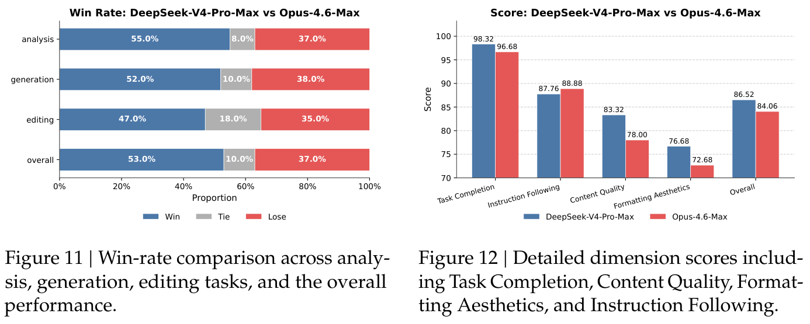
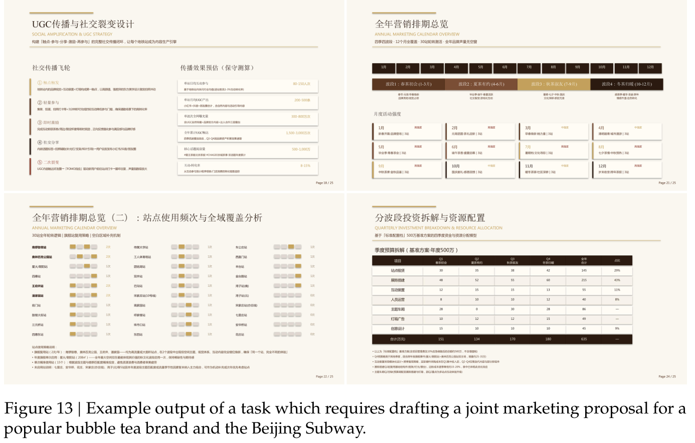
为衡量编程 agent 能力，我们从真实内部研发工作负载中整理任务。从 50 多位内部工程师收集约 200 项具有挑战性的任务，涉及功能开发、错误修复、重构与诊断，覆盖 PyTorch、CUDA、Rust 和 C++ 等多样技术栈。每项任务都附有原始仓库、对应执行环境与人工标注评分准则；严格质量过滤后，保留 30 项作为评测集。如表 8 所示，DeepSeek-V4-Pro 显著超越 Claude Sonnet 4.5，接近 Claude Opus 4.5 水平。
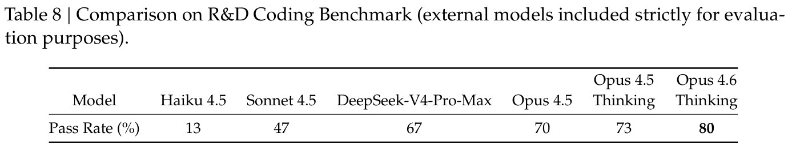
我们向 DeepSeek 开发者与研究者（N = 85）开展调查；他们都有在日常工作中使用 DeepSeek-V4-Pro 进行 agent 编程的经验。询问与其他前沿模型相比，DeepSeek-V4-Pro 是否已可作为其默认、主要编程模型时，52% 回答是，39% 倾向于是，不足 9% 回答否。受访者认为 DeepSeek-V4-Pro 在大多数任务上能提供满意结果，但也指出小错误、误解模糊提示词以及偶尔过度思考的问题。
本工作发布 DeepSeek-V4 系列预览版本，旨在构建突破超长上下文处理效率壁垒的下一代 LLM。通过结合整合 CSA 与 HCA 的混合 attention 架构，DeepSeek-V4 系列在长序列效率上实现显著飞跃。架构创新与广泛基础设施优化共同实现高效、原生支持百万 token 上下文，为未来 test-time scaling、长程任务，以及在线学习等新兴范式奠定必要基础。评测结果表明，DeepSeek-V4-Pro 的最大推理投入模式 DeepSeek-V4-Pro-Max 重新定义了开放模型的最先进水平。它在知识基准上大幅超越此前开源模型，取得接近前沿专有模型的优秀推理性能，并提供具有竞争力的 agent 能力。同时，DeepSeek-V4-Flash-Max 在保持高性价比架构的同时，达到与领先闭源模型相当的推理性能。我们相信，DeepSeek-V4 系列为开放模型开启了百万长度上下文的新时代，为更高效率、更大规模和更强智能铺平道路。
为追求极致长上下文效率，DeepSeek-V4 系列采用大胆的架构设计。为降低风险，我们保留了许多经初步验证的组件与技巧；这些设计虽有效，却使架构相对复杂。未来迭代中，我们将开展更全面、有原则的研究，提炼最本质的架构设计，使其更加简洁优雅，同时不牺牲性能。此外，虽然 Anticipatory Routing 与 SwiGLU 限幅已被证明能有效缓解训练不稳定性，但其底层原理仍缺乏充分理解。我们将积极研究训练稳定性的基础问题，加强内部指标监控，争取以更有理论依据和预测能力的方法实现稳定的大规模训练。
此外，除 MoE 和稀疏 attention 架构外，我们还将积极探索新的模型稀疏维度，例如更稀疏的 embedding 模块（Cheng et al., 2026），在不损害能力的前提下进一步提高计算与内存效率。也将持续研究低延迟架构与系统技术，使长上下文部署及交互响应更快。另外，我们认识到长程、多轮 agent 任务的重要性与实际价值，将持续在此方向迭代探索。我们也在努力将多模态能力融入模型。最后，我们致力于开发更好的数据整理与合成策略，在越来越广泛的场景和任务中，持续增强模型智能、稳健性与实际可用性。
AA. GDPval-AA 排行榜, 2025. URL https://artificialanalysis.ai/methodology/intelligence-benchmarking#gdpval-aa.
T. Achim, A. Best, A. Bietti, K. Der, M. Fédérico, S. Gukov, D. Halpern-Leistner, K. Henningsgard, Y. Kudryashov, A. Meiburg, 等 Aristotle：IMO 水平的自动定理证明. arXiv 预印本 arXiv:2510.01346, 2025.
A. Agache, M. Brooker, A. Florescu, A. Iordache, A. Liguori, R. Neugebauer, P. Piwonka, and D.-M. Popa. Firecracker：面向无服务器应用的轻量级虚拟化. In Proceedings of the 17th Usenix Conference on Networked Systems Design and Implementation, NSDI’20, page 419–434, USA, 2020. USENIX Association. ISBN 9781939133137.
O. J. Aimuyo, B. Oh, and R. Singh. FlashMoE：单内核中的快速分布式 MoE. Advances in Neural Information Processing Systems, 2025. URL https://neurips.cc/virtual/2025/poster/119124.
J. Ainslie, J. Lee-Thorp, M. de Jong, Y. Zemlyanskiy, F. Lebrón, and S. Sanghai. GQA：从多头 checkpoint 训练广义多查询 Transformer 模型. arXiv 预印本 arXiv:2305.13245, 2023.
J. Asher. LeanExplore：Lean 4 声明搜索引擎, 2025. URL https://arxiv.org/abs/2506.11085.
Y. Bai, Y. Bao, G. Chen, J. Chen, N. Chen, R. Chen, Y. Chen, Y. Chen, Y. Chen, Z. Chen, J. Cui, H. Ding, M. Dong, A. Du, C. Du, D. Du, Y. Du, Y. Fan, Y. Feng, K. Fu, B. Gao, H. Gao, P. Gao, T. Gao, X. Gu, L. Guan, H. Guo, J. Guo, H. Hu, X. Hao, T. He, W. He, W. He, C. Hong, Y. Hu, Z. Hu, W. Huang, Z. Huang, Z. Huang, T. Jiang, Z. Jiang, X. Jin, Y. Kang, G. Lai, C. Li, F. Li, H. Li, M. Li, W. Li, Y. Li, Y. Li, Z. Li, Z. Li, H. Lin, X. Lin, Z. Lin, C. Liu, C. Liu, H. Liu, J. Liu, J. Liu, L. Liu, S. Liu, T. Y. Liu, T. Liu, W. Liu, Y. Liu, Y. Liu, Y. Liu, Y. Liu, Z. Liu, E. Lu, L. Lu, S. Ma, X. Ma, Y. Ma, S. Mao, J. Mei, X. Men, Y. Miao, S. Pan, Y. Peng, R. Qin, B. Qu, Z. Shang, L. Shi, S. Shi, F. Song, J. Su, Z. Su, X. Sun, F. Sung, H. Tang, J. Tao, Q. Teng, C. Wang, D. Wang, F. Wang, and H. Wang. Kimi K2：开放的 agent 智能. CoRR, abs/2507.20534, 2025a. URL https://doi.org/10.48550/arXiv.2507.20534.
Y. Bai, S. Tu, J. Zhang, H. Peng, X. Wang, X. Lv, S. Cao, J. Xu, L. Hou, Y. Dong, 等 LongBench v2：面向真实长上下文多任务的更深入理解与推理. In Proceedings of the 63rd Annual Meeting of the Association for Computational Linguistics (Volume 1: Long Papers), pages 3639–3664, 2025b.
M. Balunovic´, J. Dekoninck, I. Petrov, N. Jovanovic´, and M. Vechev. MathArena：在无污染数学竞赛上评估 LLM. Proceedings of the Neural Information Processing Systems Track on Datasets and Benchmark, 2025.
C. Bandi, B. Hertzberg, G. Boo, T. Polakam, J. Da, S. Hassaan, M. Sharma, A. Park, E. Hernandez, D. Rambado, 等 MCP-Atlas：使用真实 MCP 服务器评估工具使用能力的大规模基准. arXiv 预印本 arXiv:2602.00933, 2026.
F. Bellard. QEMU：快速、可移植的动态翻译器. In Proceedings of the Annual Conference on USENIX Annual Technical Conference, ATEC ’05, page 41, USA, 2005. USENIX Association.
I. Bello, H. Pham, Q. V. Le, M. Norouzi, and S. Bengio. 利用强化学习进行神经组合优化, 2017. URL https://openreview.net/forum?id=rJY3vK9eg.
J. Chen, W. Chen, J. Du, J. Hu, Z. Jiang, A. Jie, X. Jin, X. Jin, C. Li, W. Shi, Z. Wang, M. Wang, C. Wei, S. Wei, H. Xin, F. Yang, W. Gao, Z. Yuan, T. Zhan, Z. Zheng, T. Zhou, and T. H. Zhu. Seed-Prover 1.5：通过从经验中学习掌握本科水平定理证明, 2025. URL https://arxiv.org/abs/2512.17260.
M. Chen, J. Tworek, H. Jun, Q. Yuan, H. P. de Oliveira Pinto, J. Kaplan, H. Edwards, Y. Burda, N. Joseph, G. Brockman, A. Ray, R. Puri, G. Krueger, M. Petrov, H. Khlaaf, G. Sastry, P. Mishkin, B. Chan, S. Gray, N. Ryder, M. Pavlov, A. Power, L. Kaiser, M. Bavarian, C. Winter, P. Tillet, F. P. Such, D. Cummings, M. Plappert, F. Chantzis, E. Barnes, A. Herbert-Voss, W. H. Guss, A. Nichol, A. Paino, N. Tezak, J. Tang, I. Babuschkin, S. Balaji, S. Jain, W. Saunders, C. Hesse, A. N. Carr, J. Leike, J. Achiam, V. Misra, E. Morikawa, A. Radford, M. Knight, M. Brundage, M. Murati, K. Mayer, P. Welinder, B. McGrew, D. Amodei, S. McCandlish, I. Sutskever, and W. Zaremba. 评估使用代码训练的 LLM. CoRR, abs/2107.03374, 2021. URL https://arxiv.org/abs/2107.03374.
T. Chen, T. Moreau, Z. Jiang, L. Zheng, E. Yan, H. Shen, M. Cowan, L. Wang, Y. Hu, L. Ceze, C. Guestrin, and A. Krishnamurthy. TVM：面向深度学习的自动化端到端优化编译器. In 13th USENIX Symposium on Operating Systems Design and Implementation (OSDI 18), pages 578–594, Carlsbad, CA, Oct. 2018. USENIX Association. ISBN 978-1-939133-08-3. URL https://www.usenix.org/conference/osdi18/presentation/chen.
A. Cheng, A. Jacovi, A. Globerson, B. Golan, C. Kwong, C. Alberti, C. Tao, E. Ben-David, G. S. Tomar, L. Haas, 等 FACTS 排行榜：LLM 事实性的综合基准. arXiv 预印本 arXiv:2512.10791, 2025.
X. Cheng, W. Zeng, D. Dai, Q. Chen, B. Wang, Z. Xie, K. Huang, X. Yu, Z. Hao, Y. Li, H. Zhang, H. Zhang, D. Zhao, and W. Liang. 通过可扩展查找实现条件记忆：LLM 的新稀疏维度. CoRR, abs/2601.07372, 2026. doi: 10.48550/ARXIV.2601. 07372. URL https://doi.org/10.48550/arXiv.2601.07372.
K. Cobbe, V. Kosaraju, M. Bavarian, M. Chen, H. Jun, L. Kaiser, M. Plappert, J. Tworek, J. Hilton, R. Nakano, 等 训练验证器以解决数学应用题. arXiv 预印本 arXiv:2110.14168, 2021.
D. Dai, C. Deng, C. Zhao, R. X. Xu, H. Gao, D. Chen, J. Li, W. Zeng, X. Yu, Y. Wu, Z. Xie, Y. K. Li, P. Huang, F. Luo, C. Ruan, Z. Sui, and W. Liang. DeepSeekMoE：迈向 MoE 语言模型中的极致专家专门化. CoRR, abs/2401.06066, 2024. URL https://doi.org/10.48550/arXiv.2401.06066.
T. Dao, D. Haziza, F. Massa, and G. Sizov. 用于长上下文推理的 Flash-Decoding, 2023. URL https://pytorch.org/blog/flash-decoding/.
L. De Moura and N. Bjørner. Z3：高效的 SMT 求解器. In Proceedings of the Theory and Practice of Software, 14th International Conference on Tools and Algorithms for the Construction and Analysis of Systems, TACAS’08/ETAPS’08, page 337–340, Berlin, Heidelberg, 2008. Springer-Verlag. ISBN 3540787992.
DeepSeek-AI. DeepSeek-Coder-V2：突破闭源模型在代码智能方面的壁垒. CoRR, abs/2406.11931, 2024. URL https://doi.org/10.48550/arXiv.2406.11931.
DeepSeek-AI. DeepSeek-V3 技术报告. CoRR, abs/2412.19437, 2024. URL https://doi.org/10.48550/arXiv.2412.19437.
DeepSeek-AI. DeepSeek-V2：强大、经济、高效的 MoE 语言模型. CoRR, abs/2405.04434, 2024. URL https://doi.org/10.48550/arXiv.2405.04434.
DeepSeek-AI. Fire-Flyer 文件系统, 2025. URL https://github.com/deepseek-ai/3FS.
DeepSeek-AI. DeepSeek-R1 通过强化学习激励 LLM 推理. Nat., 645(8081):633–638, 2025. URL https://doi.org/10.1038/s41586-025-09422-z.
DeepSeek-AI. DeepSeek-V3.2：推进开放 LLM 的前沿, 2025. URL https://arxiv.org/abs/2512.02556.
X. Deng, J. Da, E. Pan, Y. Y. He, C. Ide, K. Garg, N. Lauffer, A. Park, N. Pasari, C. Rane, K. Sampath, M. Krishnan, S. Kundurthy, S. Hendryx, Z. Wang, V. Bharadwaj, J. Holm, R. Aluri, C. B. C. Zhang, N. Jacobson, B. Liu, and B. Kenstler. SWE-bench Pro：AI agent 能否解决长程软件工程任务？, 2025. URL https://arxiv.org/abs/2509.16941.
H. Ding, Z. Wang, G. Paolini, V. Kumar, A. Deoras, D. Roth, and S. Soatto. 减少截断可改善语言建模. arXiv 预印本 arXiv:2404.10830, 2024.
X. Dong, Y. Fu, S. Diao, W. Byeon, Z. CHEN, A. S. Mahabaleshwarkar, S.-Y. Liu, M. V. keirsbilck, M.-H. Chen, Y. Suhara, Y. C. Lin, J. Kautz, and P. Molchanov. Hymba：面向小型语言模型的混合头架构. In The Thirteenth International Conference on Learning Representations, 2025. URL https://openreview.net/forum?id=A1ztozypga.
X. Du, Y. Yao, K. Ma, B. Wang, T. Zheng, K. Zhu, M. Liu, Y. Liang, X. Jin, Z. Wei, 等 SuperGPQA：将 LLM 评测扩展至 285 个研究生学科. arXiv 预印本 arXiv:2502.14739, 2025.
D. Dua, Y. Wang, P. Dasigi, G. Stanovsky, S. Singh, and M. Gardner. DROP：需要对段落进行离散推理的阅读理解基准. In J. Burstein, C. Doran, and T. Solorio, editors, Proceedings of the 2019 Conference of the North American Chapter of the Association for Computational Linguistics: Human Language Technologies, NAACL-HLT 2019, Minneapolis, MN, USA, June 2-7, 2019, Volume 1 (Long and Short Papers), pages 2368– 2378. Association for Computational Linguistics, 2019. doi: 10.18653/V1/N19-1246. URL https://doi.org/10.18653/v1/n19-1246.
X. Gao, M. Dong, X. Miao, W. Du, C. Yu, and H. Chen. EROFS：面向资源稀缺设备、对压缩友好的只读文件系统. In Proceedings of the 2019 USENIX Conference on Usenix Annual Technical Conference, USENIX ATC ’19, page 149–162, USA, 2019. USENIX Association. ISBN 9781939133038.
A. P. Gema, J. O. J. Leang, G. Hong, A. Devoto, A. C. M. Mancino, R. Saxena, X. He, Y. Zhao, X. Du, M. R. G. Madani, C. Barale, R. McHardy, J. Harris, J. Kaddour, E. van Krieken, and P. Minervini. 我们已经完成 MMLU 了吗？ CoRR, abs/2406.04127, 2024. URL https://doi.org/10.48550/arXiv.2406.04127.
F. Gloeckle, B. Y. Idrissi, B. Rozière, D. Lopez-Paz, and G. Synnaeve. 通过 MTP 获得更好、更快的 LLM. In Forty-first International Conference on Machine Learning, ICML 2024, Vienna, Austria, July 21-27, 2024. OpenReview.net, 2024. URL https://openreview.net/forum?id=pEWAcejiU2.
Y. Gu, L. Dong, F. Wei, and M. Huang. MiniLLM：LLM 知识蒸馏. In The Twelfth International Conference on Learning Representations, 2024.
L. Haas, G. Yona, G. D’Antonio, S. Goldshtein, and D. Das. SimpleQA Verified：衡量参数化知识的可靠事实性基准. arXiv 预印本 arXiv:2509.07968, 2025.
Y. He, S. Li, J. Liu, Y. Tan, W. Wang, H. Huang, X. Bu, H. Guo, C. Hu, B. Zheng, 等 Chinese SimpleQA：LLM 的中文事实性评测. arXiv 预印本 arXiv:2411.07140, 2024.
D. Hendrycks, C. Burns, S. Basart, A. Zou, M. Mazeika, D. Song, and J. Steinhardt. 衡量大规模多任务语言理解能力. arXiv 预印本 arXiv:2009.03300, 2020.
D. Hendrycks, C. Burns, S. Kadavath, A. Arora, S. Basart, E. Tang, D. Song, and J. Steinhardt. 使用 MATH 数据集衡量数学问题求解能力. arXiv 预印本 arXiv:2103.03874, 2021.
Y. Huang, Y. Bai, Z. Zhu, J. Zhang, J. Zhang, T. Su, J. Liu, C. Lv, Y. Zhang, J. Lei, 等 C-Eval：面向基础模型的多层次、多学科中文评测套件. arXiv 预印本 arXiv:2305.08322, 2023.
D. Hupkes and N. Bogoychev. MultiLoKo：覆盖 31 种语言的 LLM 多语言本地知识基准. CoRR, abs/2504.10356, 2025. doi: 10.48550/ARXIV.2504.10356. URL https://doi.org/10.48550/arXiv.2504.10356.
B. Jacob, S. Kligys, B. Chen, M. Zhu, M. Tang, A. Howard, H. Adam, and D. Kalenichenko. 为高效纯整数运算推理进行神经网络量化与训练. In Proceedings of the IEEE Conference on Computer Vision and Pattern Recognition (CVPR), June 2018.
N. Jain, K. Han, A. Gu, W.-D. Li, F. Yan, T. Zhang, S. Wang, A. Solar-Lezama, K. Sen, and I. Stoica. LiveCodeBench：全面、无污染地评估 LLM 代码能力. arXiv 预印本 arXiv:2403.07974, 2024.
K. Jordan, Y. Jin, V. Boza, J. You, F. Cesista, L. Newhouse, and J. Bernstein. Muon：神经网络隐藏层优化器. Cited on, page 10, 2024.
M. Joshi, E. Choi, D. Weld, and L. Zettlemoyer. TriviaQA：面向阅读理解的大规模远程监督挑战数据集. In R. Barzilay and M.-Y. Kan, editors, Proceedings of the 55th Annual Meeting of the Association for Computational Linguistics (Volume 1: Long Papers), pages 1601–1611, Vancouver, Canada, July 2017. Association for Computational Linguistics. doi: 10.18653/v1/P17-1147. URL https://aclanthology.org/P17-1147.
H. Li, Y. Yuan, R. Du, K. Ma, L. Liu, and W. Hsu. DADI：面向敏捷、弹性应用部署的块级镜像服务. In 2020 USENIX Annual Technical Conference (USENIX ATC 20), pages 727–740. USENIX Association, July 2020. ISBN 978-1-939133-14-4. URL https://www.usenix.org/conference/atc20/presentation/li-huiba.
H. Li, Y. Zhang, F. Koto, Y. Yang, H. Zhao, Y. Gong, N. Duan, and T. Baldwin. CMMLU：衡量中文大规模多任务语言理解能力. arXiv 预印本 arXiv:2306.09212, 2023.
J. Li, W. Zhao, J. Zhao, W. Zeng, H. Wu, X. Wang, R. Ge, Y. Cao, Y. Huang, W. Liu, 等 Tool Decathlon：评测语言 agent 执行多样、真实和长程任务的能力. arXiv 预印本 arXiv:2510.25726, 2025.
Y. Li, F. Wei, C. Zhang, and H. Zhang. EAGLE：推测采样需要重新思考特征不确定性. In Forty-first International Conference on Machine Learning, ICML 2024, Vienna, Austria, July 21-27, 2024. OpenReview.net, 2024. URL https://openreview.net/forum?id=1NdN7eXyb4.
J. Liu, J. Su, X. Yao, Z. Jiang, G. Lai, Y. Du, Y. Qin, W. Xu, E. Lu, J. Yan, Y. Chen, H. Zheng, Y. Liu, S. Liu, B. Yin, W. He, H. Zhu, Y. Wang, J. Wang, M. Dong, Z. Zhang, Y. Kang, H. Zhang, X. Xu, Y. Zhang, Y. Wu, X. Zhou, and Z. Yang. Muon 可扩展至 LLM 训练. CoRR, abs/2502.16982, 2025. URL https://doi.org/10.48550/arXiv.2502.16982.
I. Loshchilov and F. Hutter. 解耦权重衰减正则化. arXiv 预印本 arXiv:1711.05101, 2017.
K. Lu and T. M. Lab. OPD. Thinking Machines Lab: Connectionism, 2025. doi: 10.64434/tml.20251026. https://thinkingmachines.ai/blog/on-policy-distillation.
Z. Lu, C. Li, Y. Shi, W. Shen, M. Yan, and F. Huang. CorpusQA：用于语料库级分析与推理的千万 token 基准. arXiv 预印本 arXiv:2601.14952, 2026.
T. Luong, D. Hwang, H. H. Nguyen, G. Ghiasi, Y. Chervonyi, I. Seo, J. Kim, G. Bingham, J. Lee, S. Mishra, A. Zhai, C. H. Hu, H. Michalewski, J. Kim, J. Ahn, J. Bae, X. Song, T. H. Trinh, Q. V. Le, and J. Jung. 迈向稳健的数学推理. In Proceedings of the 2025 Conference on Empirical Methods in Natural Language Processing, 2025. URL https://aclanthology.org/2025.emnlp-main.1794/.
M. A. Merrill, A. G. Shaw, N. Carlini, B. Li, H. Raj, I. Bercovich, L. Shi, J. Y. Shin, T. Walshe, E. K. Buchanan, 等 Terminal-Bench：在命令行界面的困难真实任务上评测 agent. arXiv 预印本 arXiv:2601.11868, 2026.
MiniMax. 认识 MiniMax-M2, 2025. URL https://github.com/MiniMax-AI/MiniMax-M2.
L. d. Moura and S. Ullrich. Lean 4 定理证明器与编程语言. In International Conference on Automated Deduction, pages 625–635. Springer, 2021.
Y. Nesterov. 一种求解凸规划问题的方法，其收敛速度为 𝑂(1/𝑘2). Soviet Mathematics Doklady, 27:372–376, 1983.
NVIDIA Corporation. cuBLAS 文档, 2024. URL https://docs.nvidia.com/cuda/cublas/.
OpenAI. 多语言大规模多任务语言理解（MMMLU）, 2024a. URL https://huggingface.co/datasets/openai/MMMLU.
OpenAI. OpenAI MRCR：长上下文多针 Needle-in-a-Haystack 基准, 2024b. URL https://huggingface.co/datasets/openai/mrcr.
OpenAI. 学习使用 LLM 推理, 2024c. URL https://openai.com/index/learning-to-reason-with-llms.
OpenAI. 介绍 SimpleQA, 2024d. URL https://openai.com/index/introducing-simpleqa/.
OpenAI. 介绍 SWE-bench Verified：我们发布经人工验证的 SWE-bench 子集，以更加……, 2024e. URL https://openai.com/index/introducing-swe-bench-verified/.
OpenAI. gpt-oss-120b 与 gpt-oss-20b 模型卡. CoRR, abs/2508.10925, 2025. doi: 10.48550/A RXIV.2508.10925. URL https://doi.org/10.48550/arXiv.2508.10925.
M. Osama, D. Merrill, C. Cecka, M. Garland, and J. D. Owens. Stream-K：面向 GPU 稠密矩阵乘法、以工作为中心的并行分解. In Proceedings of the 28th ACM SIGPLAN Annual Symposium on Principles and Practice of Parallel Programming, pages 429–431, 2023.
T. Patwardhan, R. Dias, E. Proehl, G. Kim, M. Wang, O. Watkins, S. P. Fishman, M. Aljubeh, P. Thacker, L. Fauconnet, 等 GDPval：在具有实际经济价值的真实任务上评估 AI 模型表现. arXiv 预印本 arXiv:2510.04374, 2025.
L. Phan, A. Gatti, Z. Han, N. Li, J. Hu, H. Zhang, C. B. C. Zhang, M. Shaaban, J. Ling, S. Shi, 等 人类最后的考试. arXiv 预印本 arXiv:2501.14249, 2025.
W. Qi, Y. Yan, Y. Gong, D. Liu, N. Duan, J. Chen, R. Zhang, and M. Zhou. ProphetNet：通过预测未来 n-gram 进行序列到序列预训练. In T. Cohn, Y. He, and Y. Liu, editors, Findings of the Association for Computational Linguistics: EMNLP 2020, Online Event, 16-20 November 2020, volume EMNLP 2020 of Findings of ACL, pages 2401–2410. Association for Computational Linguistics, 2020. URL https://doi.org/10.18653/v1/2020.findings-emnlp.217.
Qwen. Qwen3 技术报告. CoRR, abs/2505.09388, 2025. doi: 10.48550/ARXIV.2505.09388. URL https://doi.org/10.48550/arXiv.2505.09388.
S. Rajbhandari, J. Rasley, O. Ruwase, and Y. He. ZeRO：面向万亿参数模型训练的内存优化. In SC20: International Conference for High Performance Computing, Networking, Storage and Analysis, pages 1–16. IEEE, 2020.
J. K. Reed, Z. DeVito, H. He, A. Ussery, and J. Ansel. Torch.fx：面向 Python 深度学习的实用程序捕获与变换, 2022. URL https://arxiv.org/abs/2112.08429.
D. Rein, B. L. Hou, A. C. Stickland, J. Petty, R. Y. Pang, J. Dirani, J. Michael, and S. R. Bowman. GPQA：无法轻易通过 Google 搜索解答的研究生水平问答基准. arXiv 预印本 arXiv:2311.12022, 2023.
G. T. M. Riviere, S. Pathak, P. G. Sessa, C. Hardin, S. Bhupatiraju, L. Hussenot, T. Mesnard, B. Shahriari, A. Ram’e, J. Ferret, P. Liu, P. D. Tafti, A. Friesen, M. Casbon, S. Ramos, R. Kumar, C. L. Lan, S. Jerome, A. Tsitsulin, N. Vieillard, P. Stan´ czyk, S. Girgin, N. Momchev, M. Hoffman, S. Thakoor, J.-B. Grill, B. Neyshabur, A. Walton, A. Severyn, A. Parrish, A. Ahmad, A. Hutchison, A. Abdagic, A. Carl, A. Shen, A. Brock, A. Coenen, A. Laforge, A. Paterson,
B. Bastian, B. Piot, B. Wu, B. Royal, C. Chen, C. Kumar, C. Perry, C. A. Welty, C. A. Choquette- Choo, D. Sinopalnikov, D. Weinberger, D. Vijaykumar, D. Rogozi’nska, D. Herbison, E. Bandy, E. Wang, E. Noland, E. Moreira, E. Senter, E. Eltyshev, F. Visin, G. Rasskin, G. Wei, G. Cameron, G. Martins, H. Hashemi, H. Klimczak-Pluci’nska, H. Batra, H. Dhand, I. Nardini, J. Mein, J. Zhou, J. Svensson, J. Stanway, J. Chan, J. Zhou, J. Carrasqueira, J. Iljazi, J. Becker, J. Fernandez, J. R. van Amersfoort, J. Gordon, J. Lipschultz, J. Newlan, J. Ji, K. Mohamed, K. Badola, K. Black, K. Millican, K. McDonell, K. Nguyen, K. Sodhia, K. Greene, L. L. Sjoesund, L. Usui, L. Sifre, L. Heuermann, L. cia Lago, L. McNealus, L. B. Soares, L. Kilpatrick, L. Dixon, L. L. B. Martins, M. Reid, M. Singh, M. Iverson, M. Gorner, M. Velloso, M. Wirth, M. Davidow, M. Miller, M. Rahtz, M. Watson, M. Risdal, M. Kazemi, M. Moynihan, M. Zhang, M. Kahng, M. Park, M. Rahman, M. Khatwani, N. Dao, N. shad Bardoliwalla, N. Devanathan, N. Dumai, N. Chauhan, O. Wahltinez, P. Botarda, P. Barnes, P. Barham, P. Michel, P. chong Jin, P. Georgiev, P. Culliton, P. Kuppala, R. Comanescu, R. Merhej, R. Jana, R. A. Rokni, R. Agarwal, R. Mullins, S. Saadat, S. M. M. Carthy, S. Perrin, S. M. R. Arnold, S. bastian Krause, S. Dai, S. Garg, S. Sheth, S. Ronstrom, S. Chan, T. Jordan, T. Yu, T. Eccles, T. Hennigan, T. Kociský, T. Doshi, V. Jain, V. Yadav, V. Meshram, V. Dharmadhikari, W. Barkley, W. Wei, W. Ye, W. Han, W. Kwon, X. Xu, Z. Shen, Z. Gong, Z. Wei, V. Cotruta, P. Kirk, A. Rao, M. Giang, L. Peran, T. Warkentin, E. Collins, J. Barral, Z. Ghahramani, R. Hadsell, D. Sculley, J. Banks, A. Dragan, S. Petrov, O. Vinyals, J. Dean, D. Hassabis, K. Kavukcuoglu, C. Farabet, E. Buchatskaya, S. Borgeaud, N. Fiedel, A. Joulin, K. Kenealy, R. Dadashi, and A. Andreev. Gemma 2：在实用规模下改进开放语言模型. arXiv 预印本 arXiv:2408.00118, 2024.
S. Roller, S. Sukhbaatar, A. Szlam, and J. Weston. 大型稀疏模型的 Hash 层. In M. Ranzato, A. Beygelzimer, Y. N. Dauphin, P. Liang, and J. W. Vaughan, editors, Advances in Neural Information Processing Systems 34: Annual Conference on Neural Information Processing Systems 2021, NeurIPS 2021, December 6-14, 2021, virtual, pages 17555–17566, 2021. URL https://proceedings.neurips.cc/paper/2021/hash/92bf5e6240737e0326ea59846a83e076-Abstract.html.
B. D. Rouhani, R. Zhao, A. More, M. Hall, A. Khodamoradi, S. Deng, D. Choudhary, M. Cornea, E. Dellinger, K. Denolf, S. Dusan, V. Elango, M. Golub, A. Heinecke, P. James-Roxby, D. Jani, G. Kolhe, M. Langhammer, A. Li, L. Melnick, M. Mesmakhosroshahi, A. Rodriguez, M. Schulte, R. Shafipour, L. Shao, M. Siu, P. Dubey, P. Micikevicius, M. Naumov, C. Verrilli, R. Wittig, D. Burger, and E. Chung. 面向深度学习的微缩放数据格式, 2023.
K. Sakaguchi, R. L. Bras, C. Bhagavatula, and Y. Choi. WinoGrande：大规模对抗性 Winograd 模式挑战, 2019.
Z. Shao, Y. Luo, C. Lu, Z. Z. Ren, J. Hu, T. Ye, Z. Gou, S. Ma, and X. Zhang. DeepSeekMath-V2：迈向可自验证的数学推理, 2025. URL https://arxiv.org/abs/2511.22570.
N. Shazeer. 快速 Transformer decoding：只需一个写入头. CoRR, abs/1911.02150, 2019. URL http://arxiv.org/abs/1911.02150.
N. Shazeer. GLU 变体改进 Transformer. arXiv 预印本 arXiv:2002.05202, 2020.
F. Shi, M. Suzgun, M. Freitag, X. Wang, S. Srivats, S. Vosoughi, H. W. Chung, Y. Tay, S. Ruder, D. Zhou, D. Das, and J. Wei. 语言模型是多语言 CoT 推理器. In The Eleventh International Conference on Learning Representations, ICLR 2023, Kigali, Rwanda, May 1-5, 2023. OpenReview.net, 2023. URL https://openreview.net/forum?id=fR3wGCk-IXp.
J. Su, M. Ahmed, Y. Lu, S. Pan, W. Bo, and Y. Liu. RoFormer：使用 RoPE 增强 Transformer. Neurocomputing, 568:127063, 2024.
M. Suzgun, N. Scales, N. Schärli, S. Gehrmann, Y. Tay, H. W. Chung, A. Chowdhery, Q. V. Le, E. H. Chi, D. Zhou, 等 具有挑战性的 BIG-Bench 任务，以及 CoT 能否解决它们. arXiv 预印本 arXiv:2210.09261, 2022.
G. Tsoukalas, J. Lee, J. Jennings, J. Xin, M. Ding, M. Jennings, A. Thakur, and S. Chaudhuri. PutnamBench：在 Putnam 数学竞赛上评估神经定理证明器, 2024. URL https://arxiv.org/abs/2407.11214.
A. Vaswani, N. Shazeer, N. Parmar, J. Uszkoreit, L. Jones, A. N. Gomez, Ł. Kaiser, and I. Polosukhin. Attention 就是你所需要的一切. Advances in neural information processing systems, 30, 2017.
L. Wang, H. Gao, C. Zhao, X. Sun, and D. Dai. MoE 的无辅助损失负载均衡策略. CoRR, abs/2408.15664, 2024a. URL https://doi.org/10.48550/arXiv.2408.15664.
L. Wang, Y. Cheng, Y. Shi, Z. Mo, Z. Tang, W. Xie, T. Wu, L. Ma, Y. Xia, J. Xue, 等 TileLang：兼顾现代神经网络内核的可编程性与性能. In The Fourteenth International Conference on Learning Representations, 2026.
Y. Wang, X. Ma, G. Zhang, Y. Ni, A. Chandra, S. Guo, W. Ren, A. Arulraj, X. He, Z. Jiang, T. Li, M. Ku, K. Wang, A. Zhuang, R. Fan, X. Yue, and W. Chen. MMLU-Pro：更稳健、更具挑战性的多任务语言理解基准. CoRR, abs/2406.01574, 2024b. URL https://doi.org/10.48550/arXiv.2406.01574.
J. Wei, Z. Sun, S. Papay, S. McKinney, J. Han, I. Fulford, H. W. Chung, A. T. Passos, W. Fedus, and A. Glaese. BrowseComp：简单但具有挑战性的浏览 agent 基准. arXiv 预印本 arXiv:2504.12516, 2025.
T. Wei, J. Luan, W. Liu, S. Dong, and B. Wang. CMath：你的语言模型能否通过中国小学数学测试？, 2023.
G. Xiao, Y. Tian, B. Chen, S. Han, and M. Lewis. 使用 attention sink 实现高效流式语言模型. In The Twelfth International Conference on Learning Representations, ICLR 2024, Vienna, Austria, May 7-11, 2024. OpenReview.net, 2024. URL https://openreview.net/forum?id=NG7sS51zVF.
Z. Xie, Y. Wei, H. Cao, C. Zhao, C. Deng, J. Li, D. Dai, H. Gao, J. Chang, K. Yu, L. Zhao, S. Zhou, Z. Xu, Z. Zhang, W. Zeng, S. Hu, Y. Wang, J. Yuan, L. Wang, and W. Liang. mHC: Manifold-Constrained Hyper-Connections, 2026. URL https://arxiv.org/abs/2512.24880.
L. Xu, H. Hu, X. Zhang, L. Li, C. Cao, Y. Li, Y. Xu, K. Sun, D. Yu, C. Yu, Y. Tian, Q. Dong, W. Liu, B. Shi, Y. Cui, J. Li, J. Zeng, R. Wang, W. Xie, Y. Li, Y. Patterson, Z. Tian, Y. Zhang, H. Zhou, S. Liu, Z. Zhao, Q. Zhao, C. Yue, X. Zhang, Z. Yang, K. Richardson, and Z. Lan. CLUE：中文语言理解评测基准. In D. Scott, N. Bel, and C. Zong, editors, Proceedings of the 28th International Conference on Computational Linguistics, COLING 2020, Barcelona, Spain (Online), December 8-13, 2020, pages 4762–4772. International Committee on Computational Linguistics, 2020. doi: 10.18653/V1/2020.COLING-MAIN.419. URL https://doi.org/10.18653/v1/2020.coling-main.419.
J. Yang, K. Lieret, C. E. Jimenez, A. Wettig, K. Khandpur, Y. Zhang, B. Hui, O. Press, L. Schmidt, and D. Yang. SWE-smith：扩展软件工程 agent 的数据规模, 2025. URL https://arxiv.org/abs/2504.21798.
R. Zellers, A. Holtzman, Y. Bisk, A. Farhadi, and Y. Choi. HellaSwag：机器真的能补完你的句子吗？ In A. Korhonen, D. R. Traum, and L. Màrquez, editors, Proceedings of the 57th Conference of the Association for Computational Linguistics, ACL 2019, Florence, Italy, July 28- August 2, 2019, Volume 1: Long Papers, pages 4791–4800. Association for Computational Linguistics, 2019. doi: 10.18653/v1/p19-1472. URL https://doi.org/10.18653/v1/p19-1472.
C. Zhang, K. Du, S. Liu, W. Kwon, X. Mo, Y. Wang, X. Liu, K. You, Z. Li, M. Long, J. Zhai, J. Gonzalez, and I. Stoica. Jenga：面向异构 LLM 服务的高效内存管理. In Proceedings of the ACM SIGOPS 31st Symposium on Operating Systems Principles, SOSP ’25, page 446–461, New York, NY, USA, 2025a. Association for Computing Machinery. ISBN 9798400718700. doi: 10.1145/3731569.3764823. URL https://doi.org/10.1145/3731569.3764823.
S. Zhang, N. Zheng, H. Lin, Z. Jiang, W. Bao, C. Jiang, Q. Hou, W. Cui, S. Zheng, L.-W. Chang, Q. Chen, and X. Liu. Comet：面向 MoE 的细粒度计算与通信重叠. 2025b. URL https://arxiv.org/abs/2502.19811.
C. Zhao, L. Zhao, J. Li, Z. Xu, and C. Xu. DeepGEMM：具有细粒度缩放的简洁、高效 FP8 GEMM 内核. https://github.com/deepseek-ai/DeepGEMM, 2025.
W. Zhong, R. Cui, Y. Guo, Y. Liang, S. Lu, Y. Wang, A. Saied, W. Chen, and N. Duan. AGIEval：以人为中心的基础模型评测基准. CoRR, abs/2304.06364, 2023. doi: 10.48550/arXiv.2304.06364. URL https://doi.org/10.48550/arXiv.2304.06364.
D. Zhu, H. Huang, Z. Huang, Y. Zeng, Y. Mao, B. Wu, Q. Min, and X. Zhou. Hyper-Connections. In The Thirteenth International Conference on Learning Representations, ICLR 2025, Singapore, April 24-28, 2025. OpenReview.net, 2025. URL https://openreview.net/forum?id=9FqARW7dwB.
X. Zhu, D. Cheng, H. Li, K. Zhang, E. Hua, X. Lv, N. Ding, Z. Lin, Z. Zheng, and B. Zhou. 如何在不发生模型坍塌的情况下合成文本数据？ arXiv 预印本 arXiv:2412.14689, 2024.
T. Y. Zhuo, M. C. Vu, J. Chim, H. Hu, W. Yu, R. Widyasari, I. N. B. Yusuf, H. Zhan, J. He, I. Paul, S. Brunner, C. Gong, J. Hoang, A. R. Zebaze, X. Hong, W. Li, J. Kaddour, M. Xu, Z. Zhang, P. Yadav, and 等 BigCodeBench：使用多样函数调用与复杂指令评测代码生成. In The Thirteenth International Conference on Learning Representations, ICLR 2025, Singapore, April 24-28, 2025. OpenReview.net, 2025. URL https://openreview.net/forum?id=YrycTjllL0.
作者按名字的字母顺序排列。带 * 标记的姓名表示已离开团队的人员。
研究与工程：Anyi Xu, Bangcai Lin, Bing Xue, Bingxuan Wang*, Bingzheng Xu, Bochao Wu, Bowei Zhang, Chaofan Lin, Chen Dong, Chengda Lu, Chenggang Zhao, Chengqi Deng, Chenhao Xu, Chenze Shao, Chong Ruan*, Conner Sun, Damai Dai, Daya Guo*, Dejian Yang, Deli Chen, Donghao Li, Erhang Li, Fangyun Lin, Fangzhou Yuan, Feiyu Xia, Fucong Dai, Guangbo Hao, Guanting Chen, Guoai Cao, Guolai Meng, Guowei Li, Han Yu, Han Zhang, Hanwei Xu, Hao Li, Haofen Liang, Haoling Zhang, Haoming Luo, Haoran Wei*, Haotian Yuan, Haowei Zhang*, Haowen Luo, Haoyu Chen, Haozhe Ji, Honghui Ding, Hongxuan Tang, Huanqi Cao, Huazuo Gao, Hui Qu, Hui Zeng, J. Yang, J.Q. Zhu, Jia Yu, Jialiang Huang, Jiasheng Ye, Jiashi Li, Jiaxin Xu, Jiewen Hu, Jin Yan, Jingchang Chen, Jingli Zhou, Jingting Xiang, Jingyang Yuan, Jingyuan Cheng, Jinhua Zhu, Jiping Yu, Joseph Sun, Jun Ran*, Junguang Jiang, Junjie Qiu, Junlong Li*, Junxiao Song, Kai Dong, Kaige Gao, Kang Guan, Kexing Zhou, Kezhao Huang*, Kuai Yu, Lean Wang, Lecong Zhang, Lei Wang, Li Zhang, Liang Zhao, Lihua Guo, Lingxiao Luo, Linwang Ma, Litong Wang, Liyu Cai, Liyue Zhang, Longhao Chen, M.S. Di, M.Y Xu, Max Mei, Mingchuan Zhang, Minghua Zhang, Minghui Tang, Mingxu Zhou, Panpan Huang, Peixin Cong, Peiyi Wang, Qiancheng Wang, Qihao Zhu, Qingyang Li, Qinyu Chen, Qiushi Du, Qiwei Jiang, Rui Tian, Ruifan Xu, Ruijie Lu, Ruiling Xu, Ruiqi Ge, Ruisong Zhang, Ruizhe Pan, Runji Wang, Runqian Chen, Runqiu Yin, Runxin Xu, Ruomeng Shen, Ruoyu Zhang, S.H. Liu, Shanghao Lu, Shangyan Zhou, Shanhuang Chen, Shaofei Cai, Shaoheng Nie, Shaoyuan Chen, Shengding Hu, Shengyu Liu, Shiqiang Hu, Shirong Ma, Shiyu Wang, Shuiping Yu, Shunfeng Zhou, Shuting Pan, Shuying Yu, Songyang Zhou, Tao Ni, Tao Yun, Tian Jin, Tian Pei, Tian Ye, Tianle Lin, Tianran Ji, Tianyi Cui, Tianyuan Yue, Tingting Yu, Tun Wang, W. Zhang, Wangding Zeng, Weilin Zhao, Wen Liu, Wenfeng Liang, Wenjie Pang, Wenjing Luo, Wenjing Yao, Wenjun Gao, Wenkai Yang, Wenlve Huang, Wentao Zhang, Wenting Ma, Xi Gao, Xiang He, Xiangwen Wang, Xiao Bi, Xiaodong Liu, Xiaohan Wang, Xiaokang Chen, Xiaokang Zhang, Xiaotao Nie, Xin Cheng, Xin Liu, Xin Xie, Xingchao Liu, Xingchen Liu, Xingkai Yu, Xingyou Li, Xinyu Yang, Xu Chen, Xuanyu Wang, Xuecheng Su, Xuheng Lin, Xuwei Fu, Y.C. Yan, Y.Q. Wang*, Y.W. Ma, Yanfeng Luo, Yang Zhang, Yanhong Xu, Yanru Ma, Yanwen Huang, Yao Li, Yao Li, Yao Zhao, Yaofeng Sun, Yaohui Wang, Yi Qian, Yi Yu, Yichao Zhang, Yifan Ding, Yifan Shi, Yijia Wu, Yiliang Xiong, Ying He, Ying Zhou, Yingjia Luo, Yinmin Zhong, Yishi Piao, Yisong Wang, Yixiang Zhang, Yixiao Chen, Yixuan Tan, Yixuan Wei, Yiyang Ma, Yiyuan Liu, Yonglun Yang, Yongqiang Guo, Yongtong Wu, Yu Wu, Yuan Cheng, Yuan Ou, Yuanfan Xu, Yuanhao Li, Yuduan Wang, Yuhan Wu, Yuhao Meng, Yuheng Zou, YuKun Li, Yunfan Xiong, Yupeng Chen, Yuqian Cao, Yuqian Wang, Yushun Zhang, Yutong Lin, Yuxian Gu, Yuxiang Luo, Yuxiang You, Yuxuan Liu, Yuxuan Zhou, Yuyang Zhou, Yuzhen Huang, Z.F. Wu, Zehao Wang, Zehua Zhao, Zehui Ren, Zhangli Sha, Zhe Fu, Zhean Xu, Zhenda Xie, Zhengyan Zhang, Zhewen Hao, Zhibin Gou, Zhicheng Ma, Zhigang Yan, Zhihong Shao, Zhixian Huang, Zhixuan Chen, Zhiyu Wu, Zhizhou Ren, Zhuoshu Li, Zhuping Zhang, Zian Xu, Zihao Wang, Zihui Gu, Zijia Zhu, Zilin Li, Zipeng Zhang*, Ziwei Xie, Ziyi Gao, Zizheng Pan, Zongqing Yao.
商务与合规： Chenchen Ling, Chengyu Hou, Dongjie Ji, Fang Wei, Hengqing Zhang, Jia Luo, Jia Song, Jialu Cai, Jian Liang, Jiangting Zhou, Jieyu Yang, Jin Chen, Jingzi Zhou, Junmin Zheng, Leyi Xia, Linyan Zhu, Miaojun Wang, Mingming Li, Minmin Han, Ning Wang, Panpan
（商务与合规名单接下页）
（续上页商务与合规名单）
Wang, Peng Zhang, Ruyi Chen, Shangmian Sun, Shaoqing Wu, W.L. Xiao, Wei An, Wenqing Hou, Xianzu Wang, Xiaowen Sun, Xiaoxiang Wang, Xinyu Zhang, Xueyin Chen, Yao Xu, Yi Shao, Yiling Ma, Ying Tang, Yuehan Yang, Yuer Xu, Yukun Zha, Yuping Lin, Yuting Yan, Zekai Zhang, Zhe Ju, Zheren Gao, Zhongyu Wu, Zihua Qu, Ziyi Wan.
感谢 Dolly Deng 和其他测试人员就 DeepSeek-V4 系列模型能力提供宝贵建议与反馈。
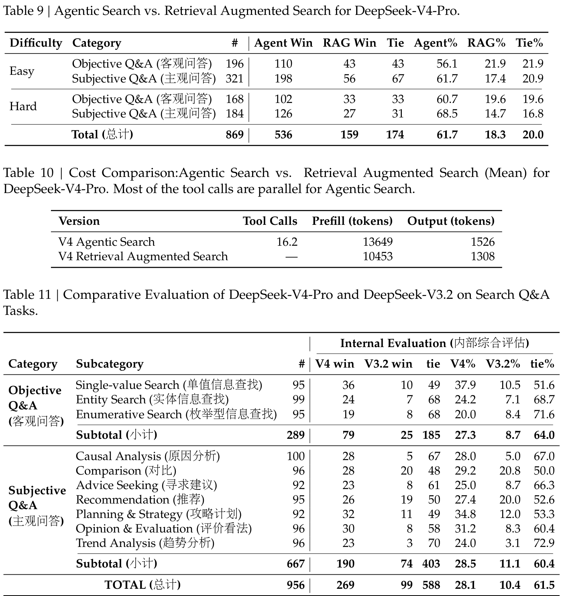
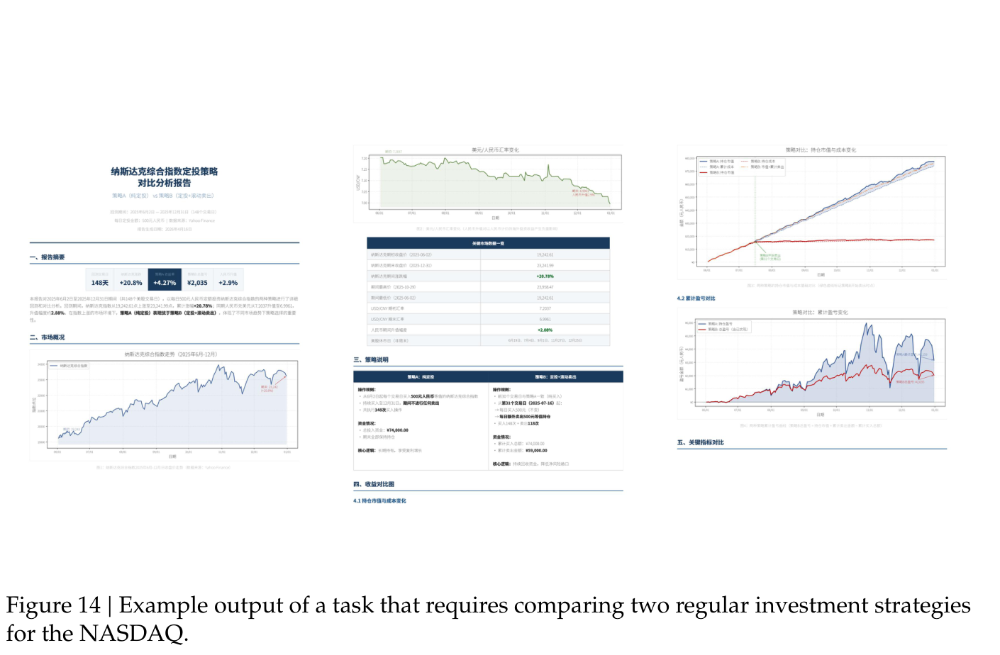
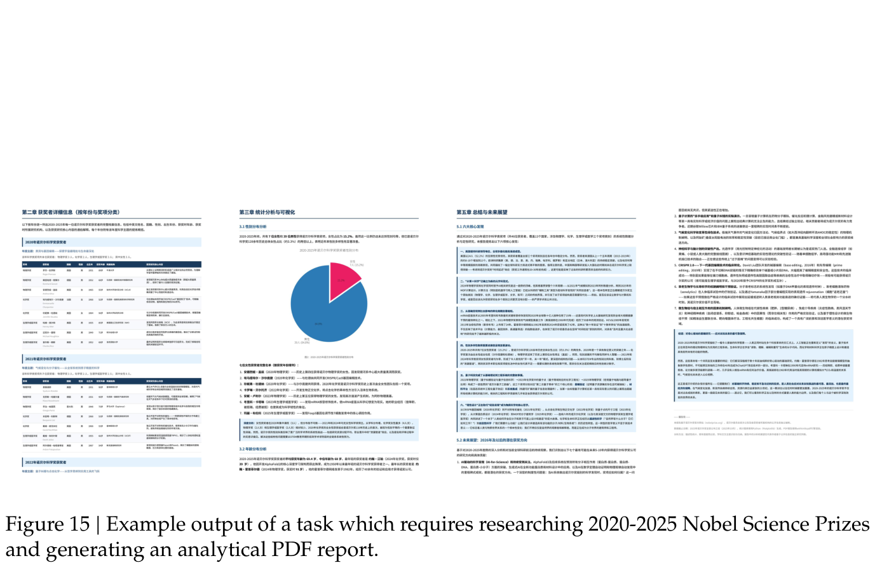
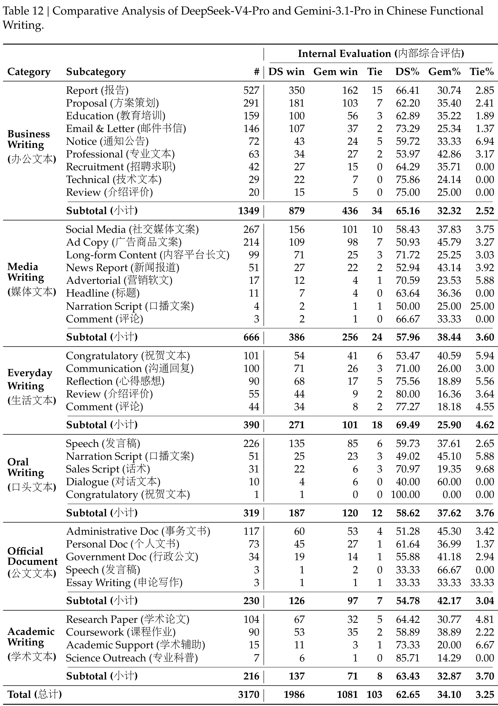
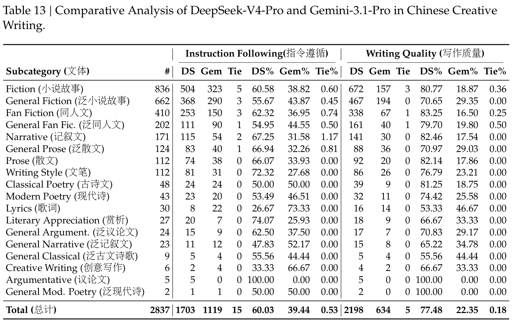
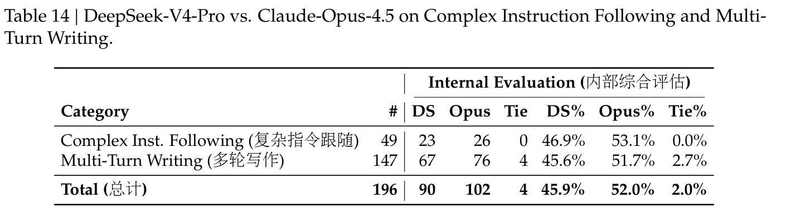